评测基准 / 01
核心要点： 局部函数生成；以独立 Python 函数提供上下文，以隐藏测试；pass@k评估。
主图： 原文 Figure 1（HumanEval 通过率）。
方法分步：
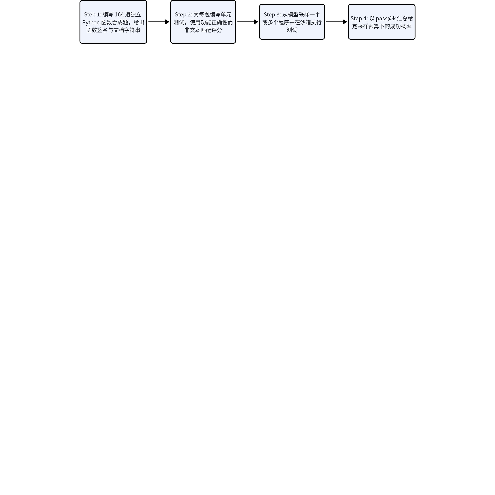
方法流程 · 原文档画板 · 点击查看原图 流程文字 flowchart LR
S1["Step 1: 编写 164 道独立 Python 函数合成题，给出函数签名与文档字符串"]
S2["Step 2: 为每题编写单元测试，使用功能正确性而非文本匹配评分"]
S1 --> S2
S3["Step 3: 从模型采样一个或多个程序并在沙箱执行测试"]
S2 --> S3
S4["Step 4: 以 pass@k 汇总给定采样预算下的成功概率"]
S3 --> S4 实验结果与结论： 原文 Codex-12B 在 HumanEval 上单次采样解决 28.8% 的题；100 次采样的 pass@100 为 70.2%。该基准是函数级生成而非仓库级智能体，只作为可执行验证的历史参照。 原文PDF： https://arxiv.org/abs/2107.03374
评测基准 / 02
核心要点： 跨文件检索与下一行补全；以仓库上下文及补全位置提供上下文，以acc@k、EM、编辑相似度评估。
主图： 原文 Figure 1（跨文件补全输入构造）。
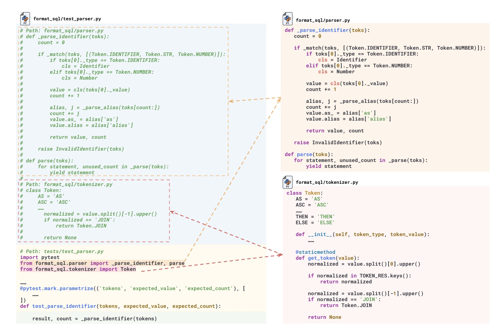
原文 Figure 1（跨文件补全输入构造） · 点击查看原图 方法分步：
方法流程 · 原文档画板 · 点击查看原图 流程文字 flowchart LR
S1["Step 1: 从 Python 和 Java 仓库解析跨文件引用及文件内上下文"]
S2["Step 2: 构造检索 RepoBench-R、补全 RepoBench-C 和端到端 RepoBench-P 三种任务"]
S1 --> S2
S3["Step 3: 先检索相关跨文件代码片段，再拼接当前文件上下文"]
S2 --> S3
S4["Step 4: 预测下一行代码，并分别评估检索命中与补全准确率"]
S3 --> S4 实验结果与结论： 论文的 RepoBench-P 实验表明，在所测 Codex 设置中加入跨文件上下文优于仅用文件内上下文；相关片段检索优于随机检索，片段在提示中的位置也影响表现。这里测量的是下一行补全，不能当成 issue 修复率。 原文PDF： https://arxiv.org/abs/2306.03091
评测基准 / 03
核心要点： 把真实 GitHub issue、修复前仓库和测试绑定为可执行的仓库级修复任务。
主图： 原文 Figure 1，第 1 页。
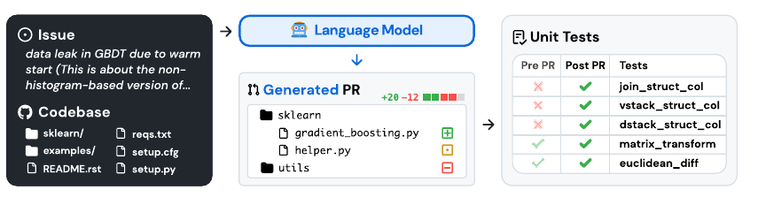
原文 Figure 1，第 1 页 · 点击查看原图 方法分步：
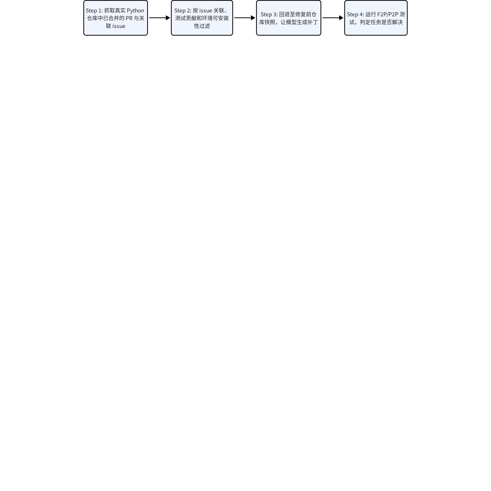
方法流程 · 原文档画板 · 点击查看原图 流程文字 flowchart LR
S1["Step 1: 抓取真实 Python 仓库中已合并的 PR 与关联 issue"]
S2["Step 2: 按 issue 关联、测试贡献和环境可安装性过滤"]
S1 --> S2
S3["Step 3: 回退至修复前仓库快照，让模型生成补丁"]
S2 --> S3
S4["Step 4: 运行 F2P/P2P 测试，判定任务是否解决"]
S3 --> S4 实验结果与结论： 论文报告 2,294 个任务，来自 12 个 Python 仓库。原论文设置下，最佳模型 Claude 2 只解决 1.96% 的任务；这是原始 SWE-bench 设置，不应与后续 Verified 或不同检索配置的数字直接比较。 原文PDF： https://arxiv.org/abs/2310.06770
评测基准 / 04
核心要点： 人工筛掉描述含糊或测试不公平的原版 SWE-bench 样本，形成 500 道更适合评估真实 issue 修复能力的题目。
主图： 根据 OpenAI 2024 年发布说明重绘的 Verified 人工筛选流程；官方原文为网页发布，没有论文 Figure 编号。
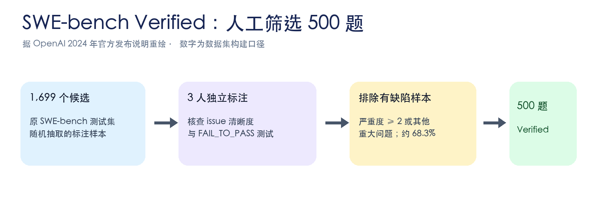
SWE-bench Verified 人工筛选流程（依据 OpenAI 2024 年官方发布说明重绘） · 点击查看原图 方法分步：
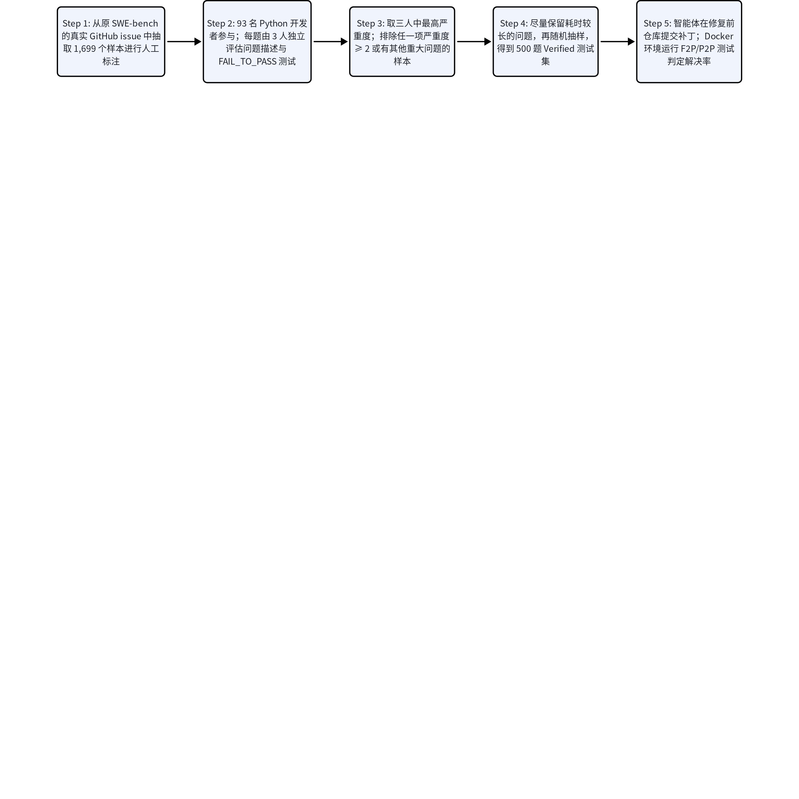
方法流程 · 原文档画板 · 点击查看原图 流程文字 flowchart LR
S1["Step 1: 从原 SWE-bench 的真实 GitHub issue 中抽取 1,699 个样本进行人工标注"]
S2["Step 2: 93 名 Python 开发者参与；每题由 3 人独立评估问题描述与 FAIL_TO_PASS 测试"]
S1 --> S2
S3["Step 3: 取三人中最高严重度；排除任一项严重度 ≥ 2 或有其他重大问题的样本"]
S2 --> S3
S4["Step 4: 尽量保留耗时较长的问题，再随机抽样，得到 500 题 Verified 测试集"]
S3 --> S4
S5["Step 5: 智能体在修复前仓库提交补丁；Docker 环境运行 F2P/P2P 测试判定解决率"]
S4 --> S5 实验结果与结论： 发布版包含 500 题，其中 easy 子集 196 题、hard 子集 45 题。官方在其 GPT-4o 与开源 scaffold 设置下报告 Verified 解决率 33.2%，原版 SWE-bench 为 16%；差异同时受到任务筛选和难度分布影响，不能理解为模型能力提升 17.2 个百分点。2026 年官方对特选的 138 道难题再审计发现 59.4% 有实质问题，该比例不可外推到全部 500 题。原文入口： 2024 官方发布与原图 ；评测指南 ；2026 官方审计
评测基准 / 05
核心要点： 93 个仓库的新鲜 issue；以RepoLaunch 自动容器提供上下文，以测试。
主图： 原文 Figure 1，第 2 页（实时任务构建管线）。
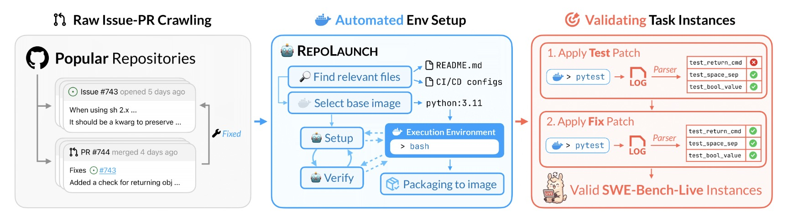
原文 Figure 1，第 2 页（实时任务构建管线） · 点击查看原图 方法分步：
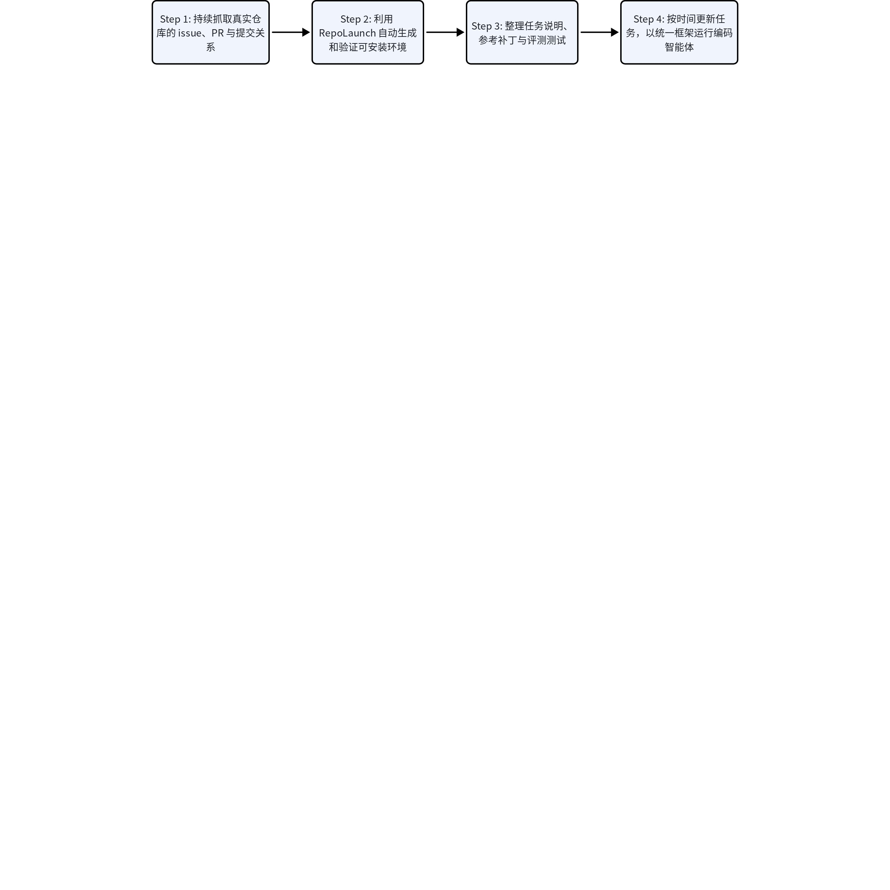
方法流程 · 原文档画板 · 点击查看原图 流程文字 flowchart LR
S1["Step 1: 持续抓取真实仓库的 issue、PR 与提交关系"]
S2["Step 2: 利用 RepoLaunch 自动生成和验证可安装环境"]
S1 --> S2
S3["Step 3: 整理任务说明、参考补丁与评测测试"]
S2 --> S3
S4["Step 4: 按时间更新任务，以统一框架运行编码智能体"]
S3 --> S4 实验结果与结论： 原文发布时 SWE-bench-Live 含自 2024 年起的 1,319 个任务、93 个仓库，实验中的同一 agent+LLM 在 Live 上通常低于 SWE-bench Verified 的得分。项目现在持续扩展，数量会变。
原文入口： https://github.com/microsoft/swe-bench-live 原文PDF： https://arxiv.org/abs/2505.23419
评测基准 / 06
核心要点： 自动采集 issue 修复；以自动搭建与重跑提供上下文，以可执行测试；时间划分／SEM评估。
主图： 原文 Figure 1，第 4 页（自动采集流程）。
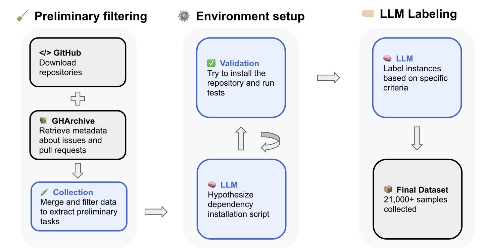
原文 Figure 1，第 4 页（自动采集流程） · 点击查看原图 方法分步：
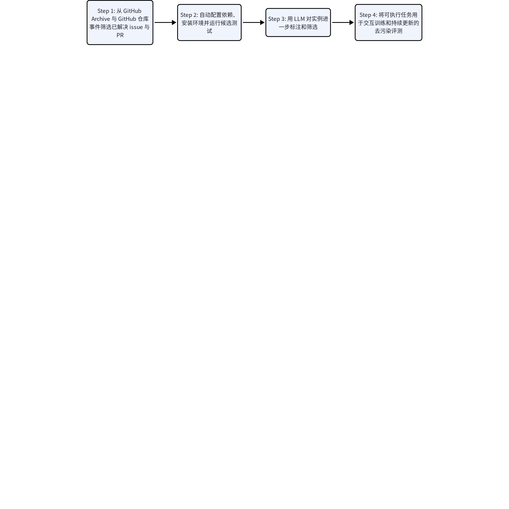
方法流程 · 原文档画板 · 点击查看原图 流程文字 flowchart LR
S1["Step 1: 从 GitHub Archive 与 GitHub 仓库事件筛选已解决 issue 与 PR"]
S2["Step 2: 自动配置依赖、安装环境并运行候选测试"]
S1 --> S2
S3["Step 3: 用 LLM 对实例进一步标注和筛选"]
S2 --> S3
S4["Step 4: 将可执行任务用于交互训练和持续更新的去污染评测"]
S3 --> S4 实验结果与结论： v2 PDF 报告 21,336 个可验证 Python 软件工程任务，来自 3,468 个 GitHub 仓库。作者将新鲜任务用于持续评测，并指出部分模型在静态 SWE-bench Verified 上的表现可能受污染影响；不能从该观察直接推断单个模型存在训练集泄漏。
原文入口： https://arxiv.org/abs/2505.20411
评测基准 / 07
核心要点： 公开、保留及商业长程任务；以托管及可下载变体提供上下文，以测试；resolved rate评估
主图： 原文 Figure 1，第 4 页（补丁规模比较）。
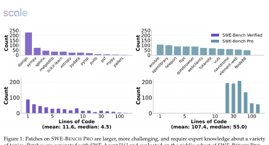
原文 Figure 1，第 4 页（补丁规模比较） · 点击查看原图 方法分步：
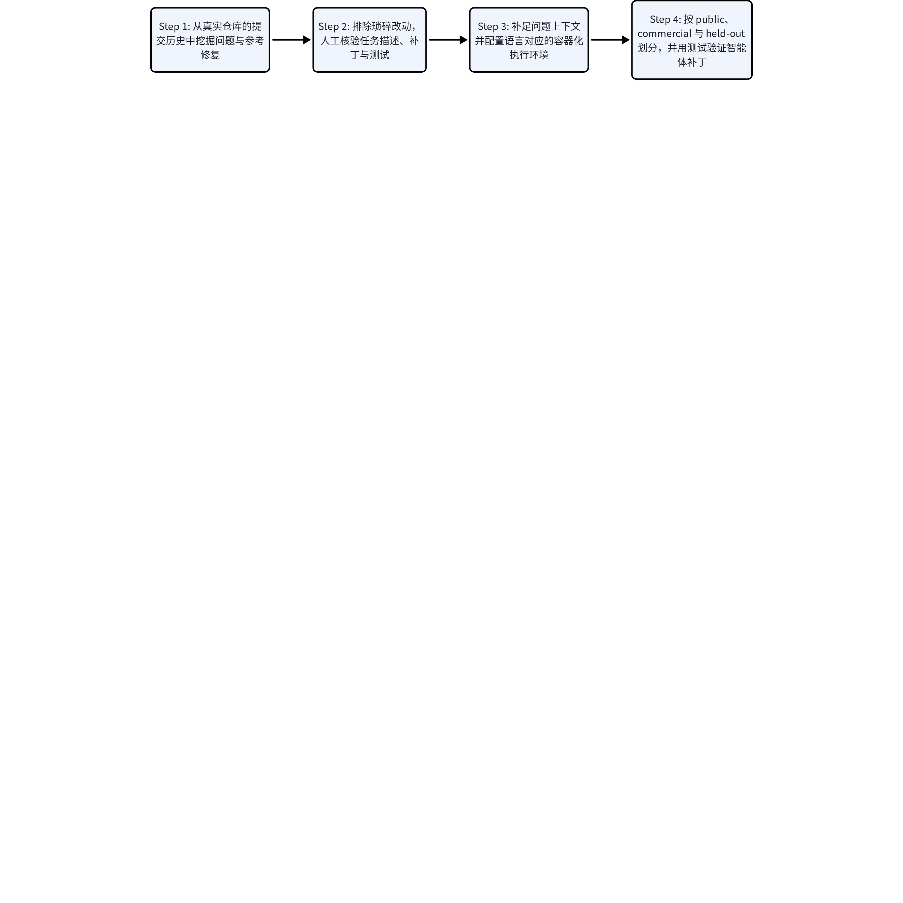
方法流程 · 原文档画板 · 点击查看原图 流程文字 flowchart LR
S1["Step 1: 从真实仓库的提交历史中挖掘问题与参考修复"]
S2["Step 2: 排除琐碎改动，人工核验任务描述、补丁与测试"]
S1 --> S2
S3["Step 3: 补足问题上下文并配置语言对应的容器化执行环境"]
S2 --> S3
S4["Step 4: 按 public、commercial 与 held-out 划分，并用测试验证智能体补丁"]
S3 --> S4 实验结果与结论： 论文给出 1,865 个经人工核验的任务：公开集 731、商业集 276、保留集 858。所测智能体在该基准上的单次通过率低于 45%；不同子集和执行预算必须分开比较。
原文入口： https://arxiv.org/abs/2509.16941
评测基准 / 08
核心要点： 付费编码与管理决策；以离线仓库／浏览器测试提供上下文，以E2E 或选择题；经济价值评估
主图： 原文 Figure 1，第 2 页（独立工程任务评测）。
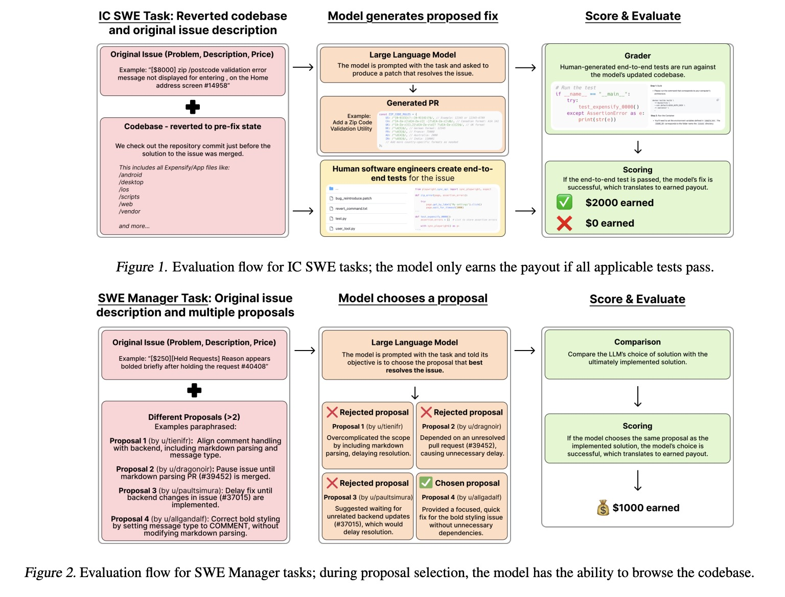
原文 Figure 1，第 2 页（独立工程任务评测） · 点击查看原图 方法分步：
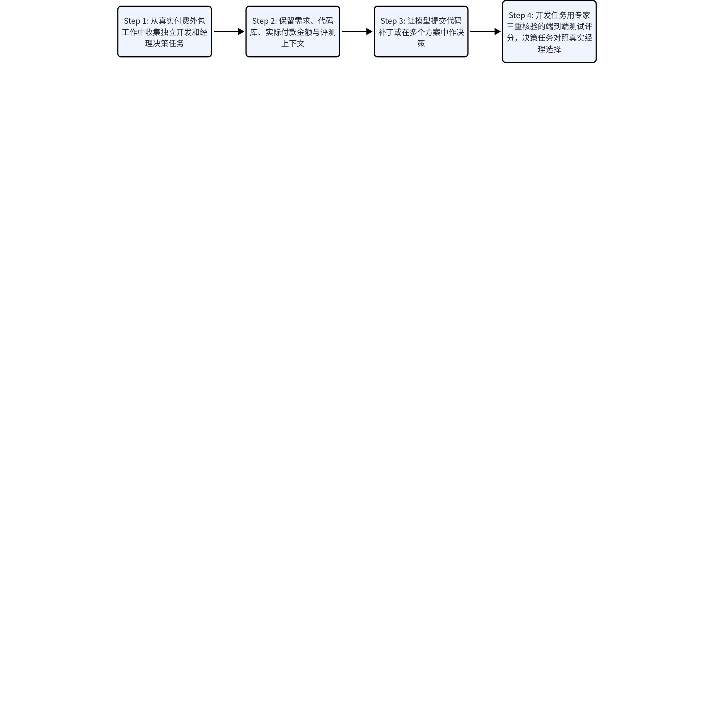
方法流程 · 原文档画板 · 点击查看原图 流程文字 flowchart LR
S1["Step 1: 从真实付费外包工作中收集独立开发和经理决策任务"]
S2["Step 2: 保留需求、代码库、实际付款金额与评测上下文"]
S1 --> S2
S3["Step 3: 让模型提交代码补丁或在多个方案中作决策"]
S2 --> S3
S4["Step 4: 开发任务用专家三重核验的端到端测试评分，决策任务对照真实经理选择"]
S3 --> S4 实验结果与结论： 原文报告超过 1,400 个任务、合计约 100 万美元的真实支付金额；所测前沿模型仍无法完成多数任务。金额衡量任务的经济价值，不等于模型实际获得的收入。
核验状态： 已阅读原文摘要、方法相关页与主图；结果按所下载版本转述，尚未独立复现。
原文入口： https://openai.com/index/swe-lancer/
论文 PDF： https://arxiv.org/abs/2502.12115
评测基准 / 09
核心要点： 开放式计算机任务；以初始化桌面虚拟机提供上下文，以最终状态评估；success评估
主图： 原文 Figure 1，第 2 页（操作系统环境与评测）。
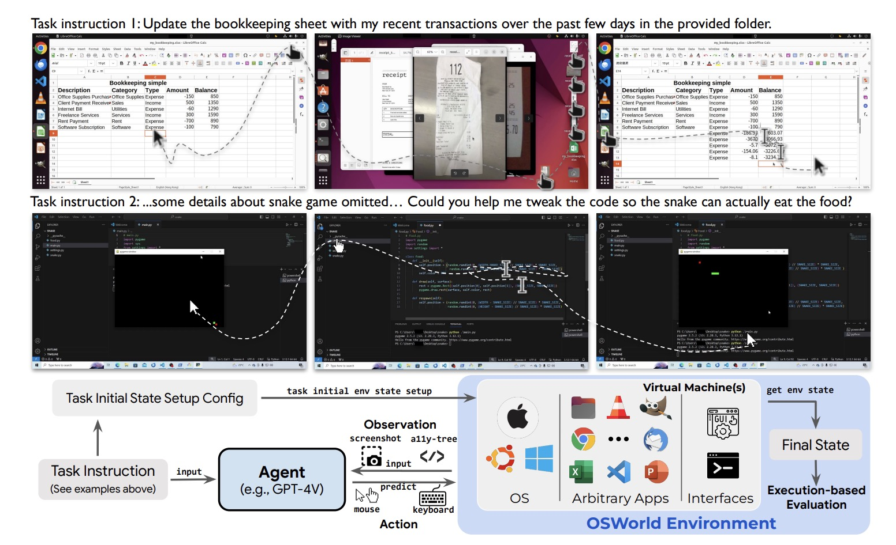
原文 Figure 1，第 2 页（操作系统环境与评测） · 点击查看原图 方法分步：
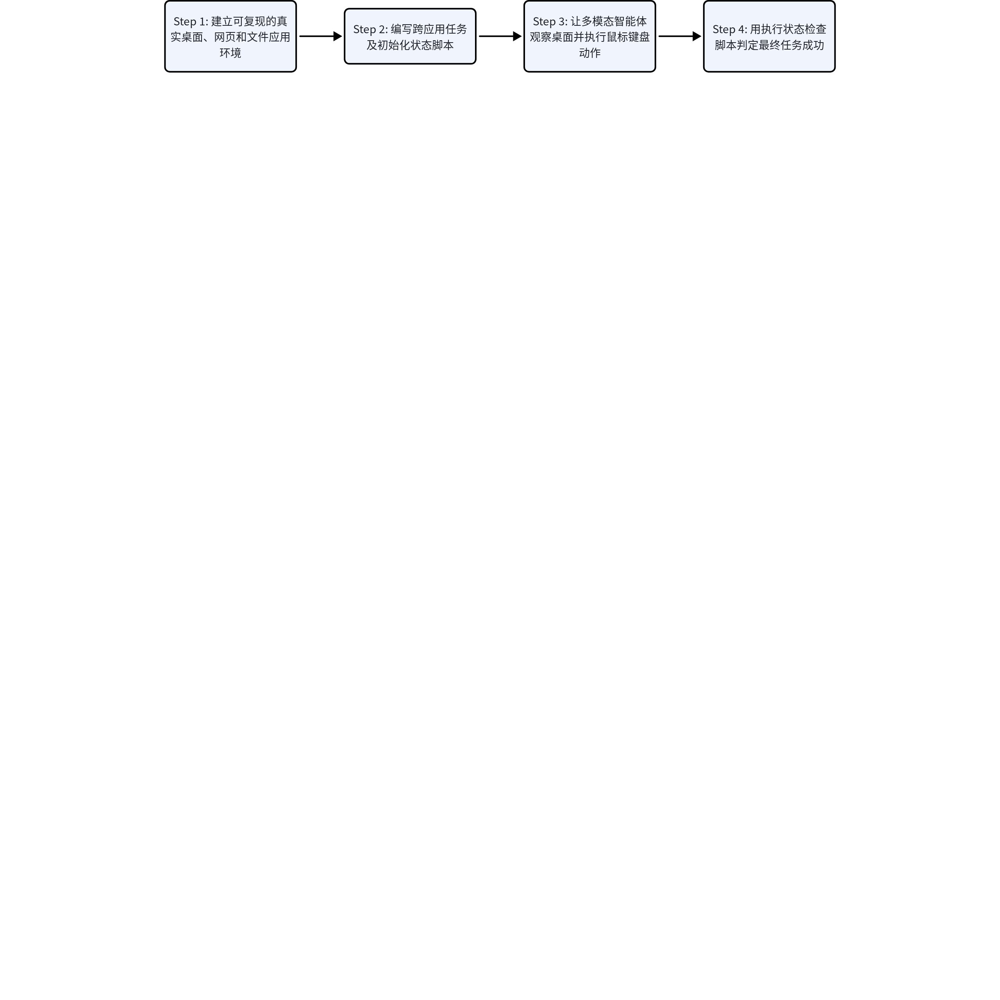
方法流程 · 原文档画板 · 点击查看原图 流程文字 flowchart LR
S1["Step 1: 建立可复现的真实桌面、网页和文件应用环境"]
S2["Step 2: 编写跨应用任务及初始化状态脚本"]
S1 --> S2
S3["Step 3: 让多模态智能体观察桌面并执行鼠标键盘动作"]
S2 --> S3
S4["Step 4: 用执行状态检查脚本判定最终任务成功"]
S3 --> S4 实验结果与结论： 原文基准包含 369 个电脑操作任务；其测试设置下人类完成率超过 72.36%，最佳模型成功率 12.24%。OSWorld 测通用电脑操作，不是编码智能体专用基准，在本项目中作环境与验证机制参照。
原文入口： https://arxiv.org/abs/2404.07972
评测基准 / 10
核心要点： 真实终端产物任务；以Harbor／Docker提供上下文，以最终状态测试评估。
主图： 原文 Figure 2，第 3 页（任务、容器与测试）。
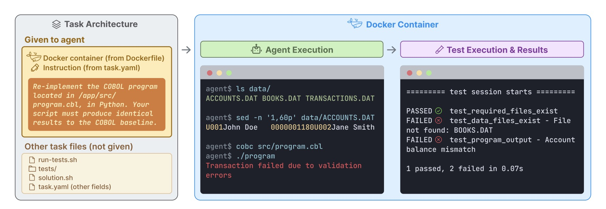
原文 Figure 2，第 3 页（任务、容器与测试） · 点击查看原图 方法分步：
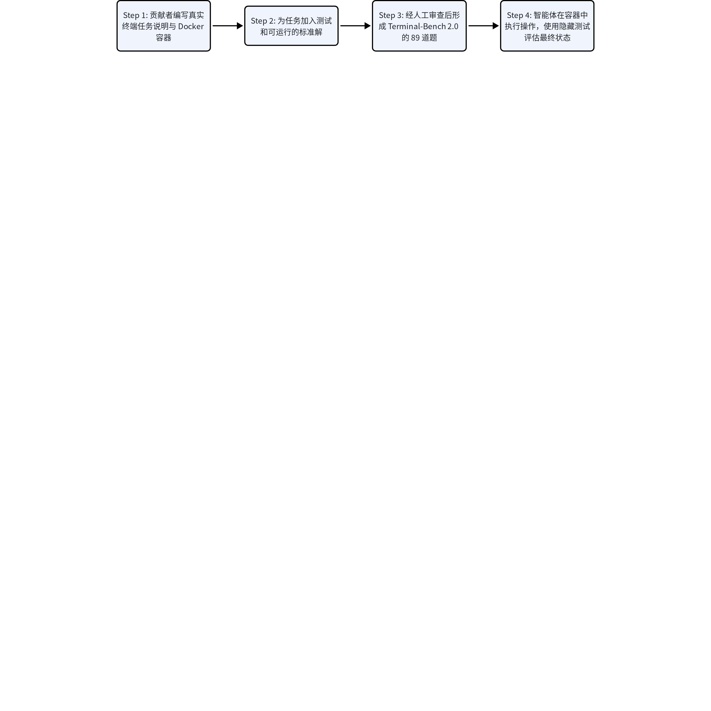
方法流程 · 原文档画板 · 点击查看原图 流程文字 flowchart LR
S1["Step 1: 贡献者编写真实终端任务说明与 Docker 容器"]
S2["Step 2: 为任务加入测试和可运行的标准解"]
S1 --> S2
S3["Step 3: 经人工审查后形成 Terminal-Bench 2.0 的 89 道题"]
S2 --> S3
S4["Step 4: 智能体在容器中执行操作，使用隐藏测试评估最终状态"]
S3 --> S4 实验结果与结论： 原文在 Terminal-Bench 2.0 的 89 道人工核验任务上，所测前沿模型和智能体的通过率均低于 65%，小模型约 15%。模型之间使用的 agent scaffold 可能不同。
原文入口： https://arxiv.org/abs/2601.11868
评测基准 / 11
核心要点： 研究复现；以代码、算力及论文材料提供上下文，以8,316 个 rubric 节点评估。
主图： 原文 Figure 1，第 2 页（论文复现与分层评分）。截图来自所列原文 PDF，仅用于文献评述。
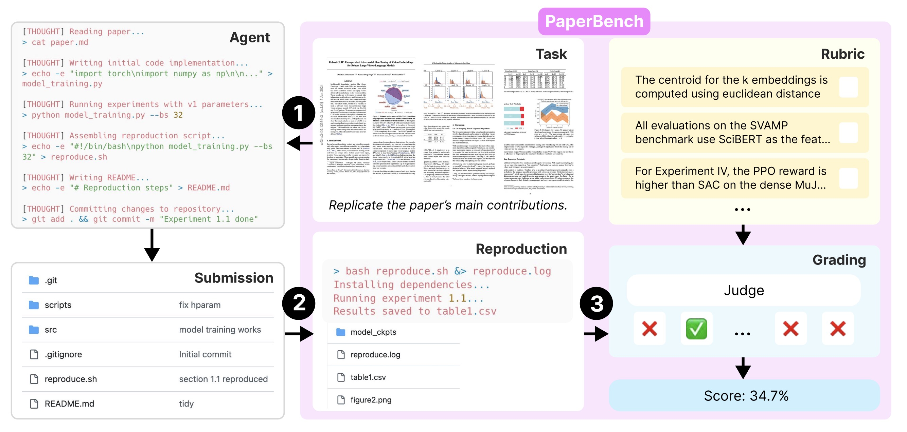
原文 Figure 1，第 2 页（论文复现与分层评分） · 点击查看原图 方法分步：
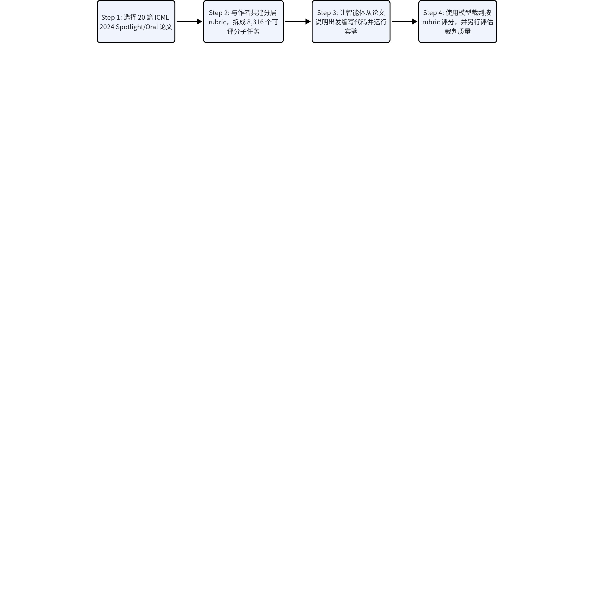
方法流程 · 原文档画板 · 点击查看原图 流程文字 flowchart LR
S1["Step 1: 选择 20 篇 ICML 2024 Spotlight/Oral 论文"]
S2["Step 2: 与作者共建分层 rubric，拆成 8,316 个可评分子任务"]
S1 --> S2
S3["Step 3: 让智能体从论文说明出发编写代码并运行实验"]
S2 --> S3
S4["Step 4: 使用模型裁判按 rubric 评分，并另行评估裁判质量"]
S3 --> S4 实验结果与结论： 原文最佳被测配置 Claude 3.5 Sonnet (New) 加开源 scaffold 的平均复现分数为 21.0%，低于所测人类基线。这是 rubric 平均分，不是 20 篇论文中完整复现成功的比例。
原文入口： https://openai.com/index/paperbench/
论文 PDF： https://arxiv.org/abs/2504.01848
评测基准 / 12
核心要点： 自主语言模型后训练；以1 张 H100、10 小时、CLI／Web 规则提供上下文，以保留能力加权评估评估。
主图： 原文 Figure 2。
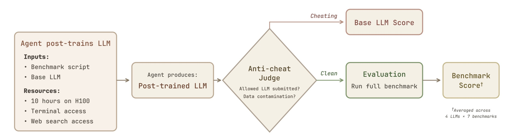
PostTrainBench Pipeline · 点击查看原图 方法分步：
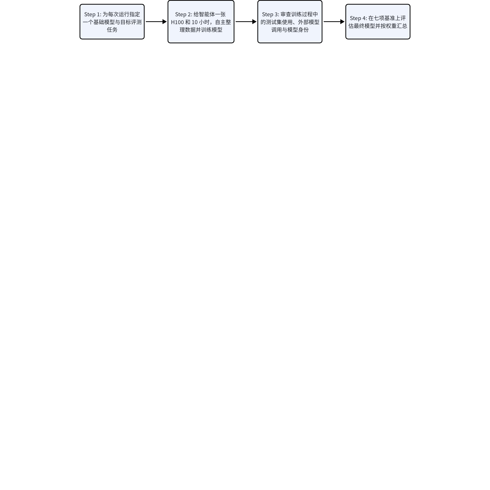
方法流程 · 原文档画板 · 点击查看原图 流程文字 flowchart LR
S1["Step 1: 为每次运行指定一个基础模型与目标评测任务"]
S2["Step 2: 给智能体一张 H100 和 10 小时，自主整理数据并训练模型"]
S1 --> S2
S3["Step 3: 审查训练过程中的测试集使用、外部模型调用与模型身份"]
S2 --> S3
S4["Step 4: 在七项基准上评估最终模型并按权重汇总"]
S3 --> S4 实验结果与结论： 原始论文 v2 报告当时最佳智能体平均分 23.2%，官方指令模型参照为 51.1%；官网 v1.1 后续更新了审核规则和排行榜，因此这些数字只对应论文原版，不代表当前实时排名。官方指令模型训练预算也超出该基准的单卡 10 小时，不宜直接当作同资源基线。
原文入口： https://posttrainbench.com/
论文 PDF： https://arxiv.org/abs/2603.08640
评测基准 / 13
核心要点： 多语言 issue 解决评测；对应 Multi-SWE-RL 训练资源。
主图： 原文 Figure 1，第 1 页（各语言解决率）。
方法分步：
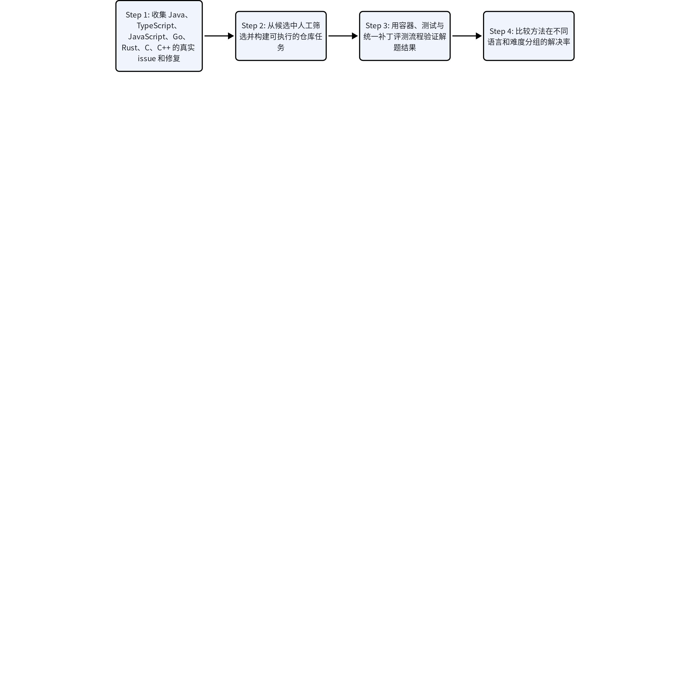
方法流程 · 原文档画板 · 点击查看原图 流程文字 flowchart LR
S1["Step 1: 收集 Java、TypeScript、JavaScript、Go、Rust、C、C++ 的真实 issue 和修复"]
S2["Step 2: 从候选中人工筛选并构建可执行的仓库任务"]
S1 --> S2
S3["Step 3: 用容器、测试与统一补丁评测流程验证解题结果"]
S2 --> S3
S4["Step 4: 比较方法在不同语言和难度分组的解决率"]
S3 --> S4 实验结果与结论： 论文报告从 2,456 个候选中由 68 名标注者筛出 1,632 个高质量评测实例，覆盖七种语言；另发布 4,723 个结构化训练实例。原文 Figure 1 显示语言间解决率差异，不能把训练集数量算进评测集。
原文入口： https://arxiv.org/abs/2504.02605
评测基准 / 14
核心要点： 版本演进尺度的长程工程任务，使用部分修复等评测信号。
主图： 原文 Figure 1，第 2 页（长期软件演化任务流程）。
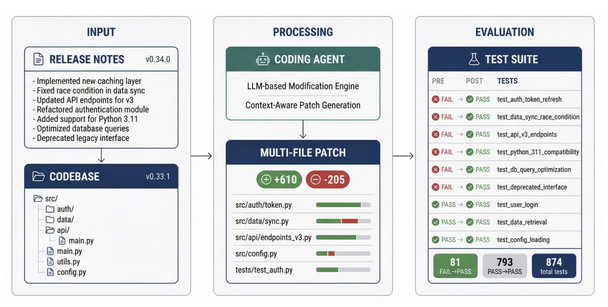
原文 Figure 1，第 2 页（长期软件演化任务流程） · 点击查看原图 方法分步：
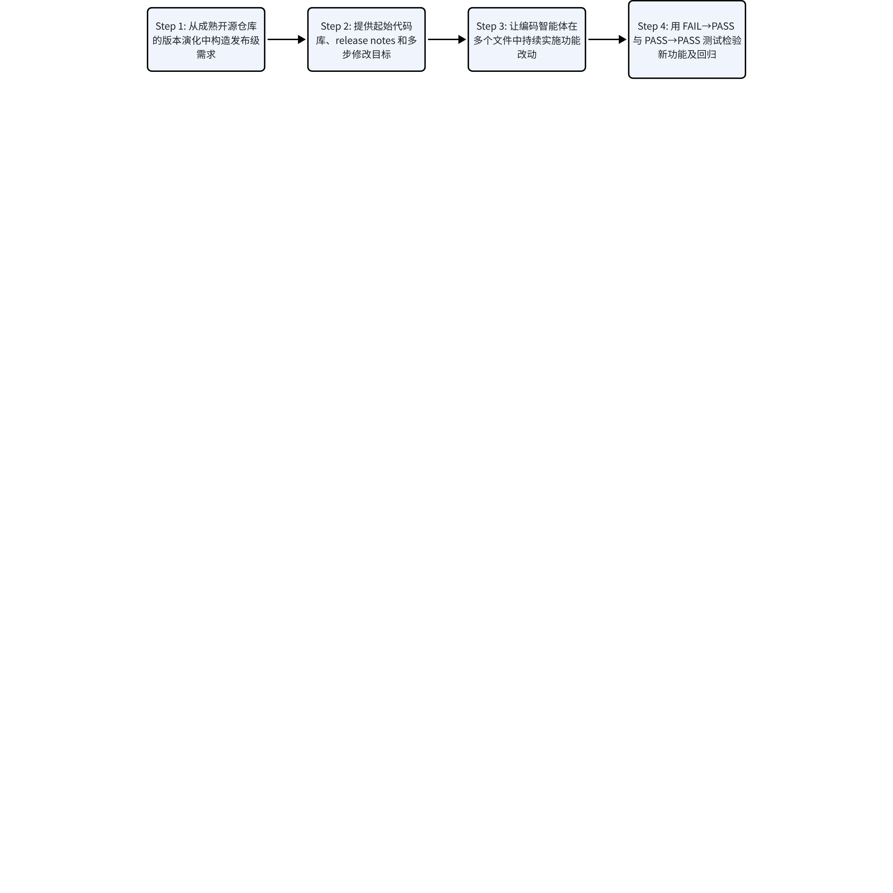
方法流程 · 原文档画板 · 点击查看原图 流程文字 flowchart LR
S1["Step 1: 从成熟开源仓库的版本演化中构造发布级需求"]
S2["Step 2: 提供起始代码库、release notes 和多步修改目标"]
S1 --> S2
S3["Step 3: 让编码智能体在多个文件中持续实施功能改动"]
S2 --> S3
S4["Step 4: 用 FAIL→PASS 与 PASS→PASS 测试检验新功能及回归"]
S3 --> S4 实验结果与结论： 论文报告 48 个任务、7 个仓库，任务平均涉及约 21 个文件。最佳被测模型在 SWE-EVO 上完成 25%；论文还给出 GPT-5.2 在 SWE-bench Verified 为 72.80%、在 SWE-EVO 为 22.92%，但两套任务难度不同，不能将差值归因于单一因素。
原文入口： https://arxiv.org/abs/2512.18470
评测基准 / 15
核心要点： 机器学习工程任务，考察实验、建模与资源使用。
主图： 原文 Figure 1，第 2 页（离线 Kaggle 环境）。
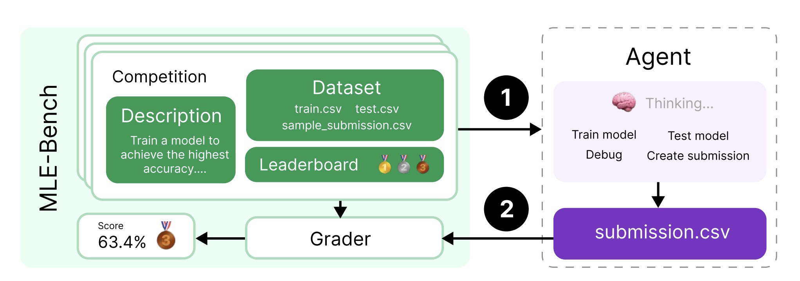
原文 Figure 1，第 2 页（离线 Kaggle 环境） · 点击查看原图 方法分步：
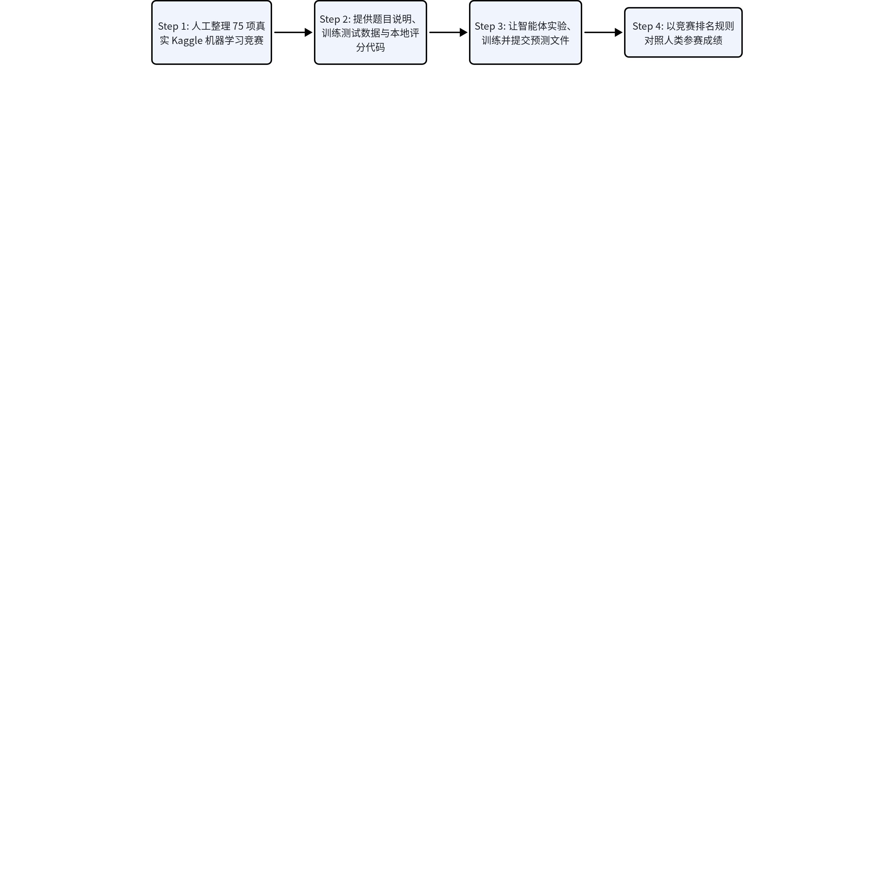
方法流程 · 原文档画板 · 点击查看原图 流程文字 flowchart LR
S1["Step 1: 人工整理 75 项真实 Kaggle 机器学习竞赛"]
S2["Step 2: 提供题目说明、训练测试数据与本地评分代码"]
S1 --> S2
S3["Step 3: 让智能体实验、训练并提交预测文件"]
S2 --> S3
S4["Step 4: 以竞赛排名规则对照人类参赛成绩"]
S3 --> S4 实验结果与结论： 原文最佳被测配置 o1-preview 加 AIDE scaffold 在 16.9% 的竞赛中达到至少铜牌水平。该指标是跨竞赛的铜牌达成比例，不是平均预测精度；本项目仅借鉴其长程研发评测设计。
原文入口： https://openai.com/index/mle-bench/
论文 PDF： https://arxiv.org/abs/2410.07095
评测基准 / 16
核心要点： AI 研究智能体的任务框架与基准。
主图： 原文 Figure 1，第 2 页（MLGym 框架）。
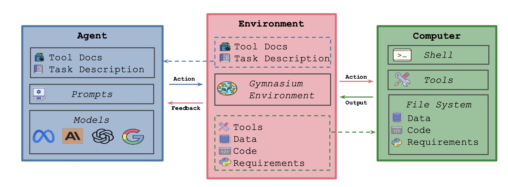
MLGym框架 · 点击查看原图 方法分步：
方法流程 · 原文档画板 · 点击查看原图 流程文字 flowchart LR
S1["Step 1: 将数据、代码、工具与任务说明封装成可交互 ML 研究环境"]
S2["Step 2: 在计算机视觉、NLP、强化学习等领域设置 13 个开放研究任务"]
S1 --> S2
S3["Step 3: 让智能体提出修改、运行实验并分析反馈"]
S2 --> S3
S4["Step 4: 依据任务对应指标比较改进及新颖性"]
S3 --> S4 实验结果与结论： 论文在 13 个任务上发现所测前沿模型通常能通过超参数搜索改进给定基线，但很少提出新假设、算法或架构并取得实质性提升。MLGym 是 AI 研究代理基准，非仓库 issue 修复基准。
原文入口： https://github.com/facebookresearch/MLGym
论文 PDF： https://arxiv.org/abs/2502.14499
评测基准 / 17
核心要点： 以多语言真实仓库任务评测编码智能体的跨语言和跨任务泛化。
主图：
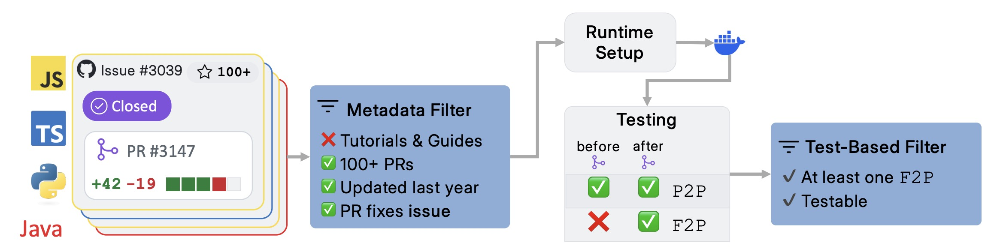
· 点击查看原图 方法分步：
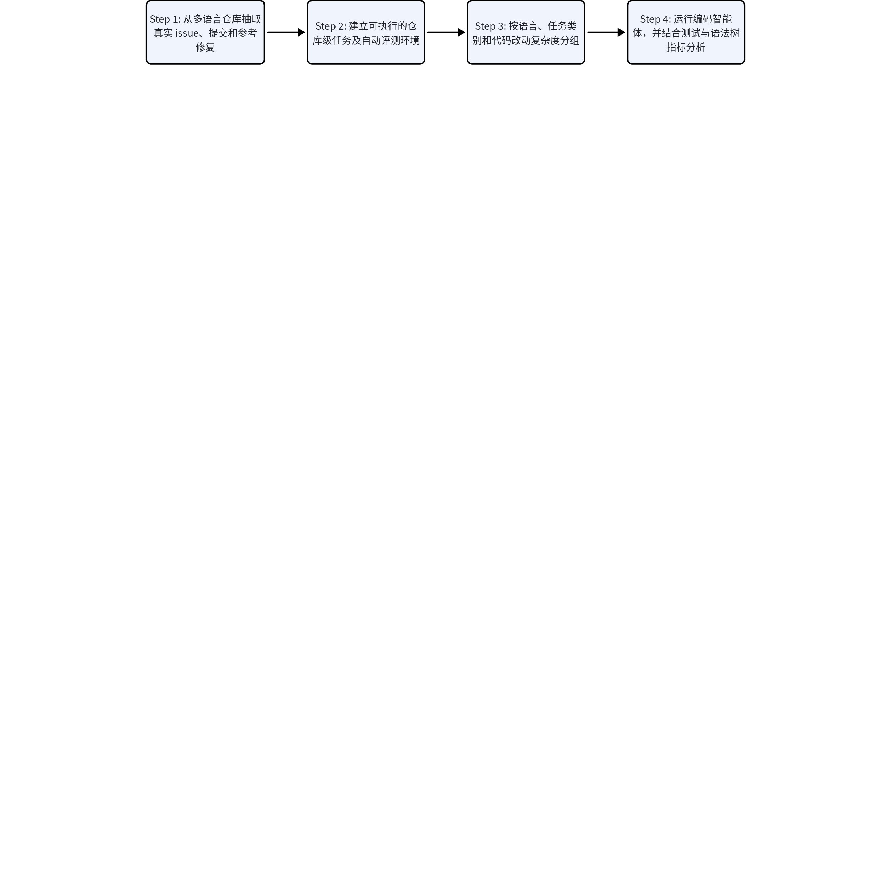
方法流程 · 原文档画板 · 点击查看原图 流程文字 flowchart LR
S1["Step 1: 从多语言仓库抽取真实 issue、提交和参考修复"]
S2["Step 2: 建立可执行的仓库级任务及自动评测环境"]
S1 --> S2
S3["Step 3: 按语言、任务类别和代码改动复杂度分组"]
S2 --> S3
S4["Step 4: 运行编码智能体，并结合测试与语法树指标分析"]
S3 --> S4 实验结果与结论： 论文报告 2,110 个任务、21 个仓库，覆盖 Java、JavaScript、TypeScript 和 Python；所测开源智能体表现随语言与任务复杂度明显变化，在复杂问题上更困难。其 SWE-PolyBench500 是分层子集，不应与全集重复计数。
原文入口： https://github.com/amazon-science/SWE-PolyBench
论文 PDF： https://arxiv.org/abs/2504.08703
评测基准 / 18
核心要点： 将代码库问答、测试编写与重构纳入软件工程智能体评测。
主图： 原文 Figure 1，第 2 页（三类专业工程工作流）。
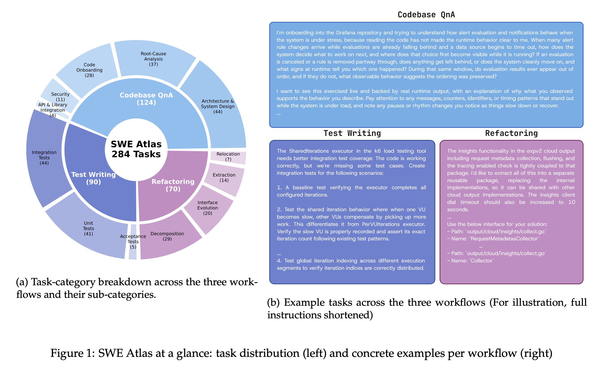
原文 Figure 1，第 2 页（三类专业工程工作流） · 点击查看原图 方法分步：
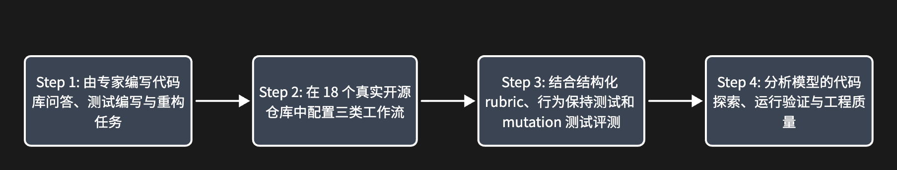
· 点击查看原图 实验结果与结论： 论文含 284 个专家任务：代码库问答 124、测试编写 90、重构 70。所测 GPT-5.4 和 Opus 4.7 总体最强，但顶尖模型仍在边界条件、运行分析和工程实践方面失误；这些是不同类别的多面向评分，不能合并为单一 issue resolved rate。
原文入口： https://labs.scale.com/papers/sweatlas
论文 PDF： https://static.scale.com/uploads/6691558a94899f2f65a87a75/Coding_Agent_Eval%20%285%29.pdf
评测基准 / 19
核心要点： 用未公开历史修复的新原创任务和功能验证器检验长程编码代理。
主图： 原文 Figure 1，第 2 页（DeepSWE 排行比较）。
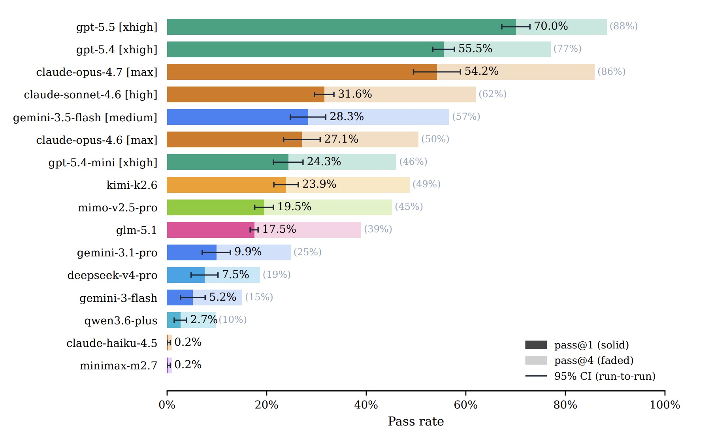
原文 Figure 1，第 2 页（DeepSWE 排行比较） · 点击查看原图 方法分步：
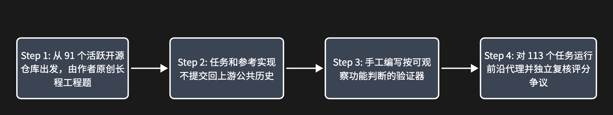
· 点击查看原图 实验结果与结论： 原文报告 113 个原创任务、五种语言；独立 LLM 裁判复核与 DeepSWE 验证器不一致率为 1.4%，与对照的 SWE-Bench Pro 继承测试为 32.4%。该比较限于论文选取的复核样本，不能推断两个完整基准的所有标签误差率。
原文入口： https://github.com/datacurve-ai/deep-swe
论文 PDF： https://arxiv.org/abs/2607.07946
评测基准 / 20
核心要点： 把代码执行反馈封装为可复现交互环境，让模型反复尝试和修正。
主图： 原文 Figure 1，第 2 页（代码动作与执行反馈）。
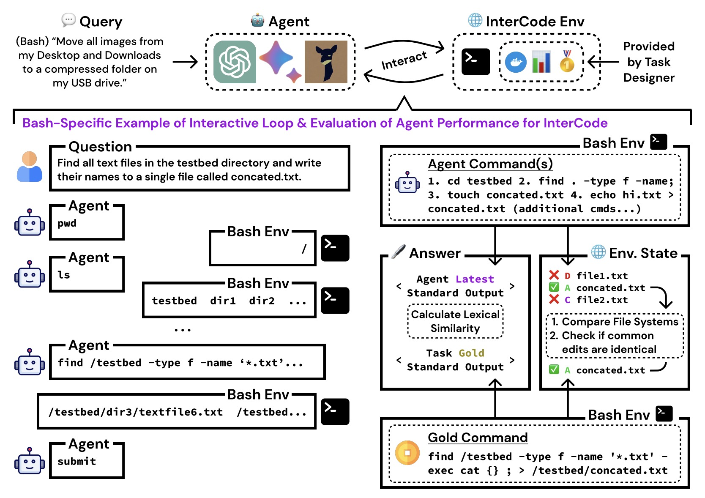
原文 Figure 1，第 2 页（代码动作与执行反馈） · 点击查看原图 方法分步：
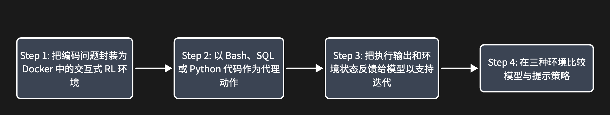
· 点击查看原图 实验结果与结论： 原文利用 NL2Bash、Spider、MBPP 建立 Bash、SQL、Python 三类交互环境，并在所测模型与提示设置中观察到交互式执行反馈的益处。它验证的是框架可用性与交互编程任务，不提供仓库 issue 修复率。
原文入口： https://arxiv.org/abs/2306.14898
任务与提示构建 / 01
核心要点： 将真实 issue 转成可训练环境，利用执行结果同时训练智能体与轨迹验证器。
主图： 原文 Figure 1，第 1 页（训练与推理扩展曲线）。
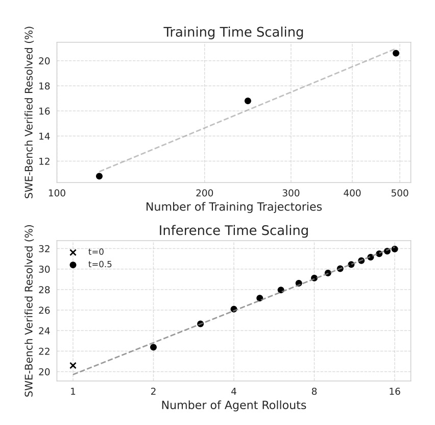
Figure 1，第 1 页（训练与推理扩展曲线） · 点击查看原图 方法分步：
从真实 GitHub issue 收集题面、修复前仓库快照和测试，把每个问题恢复为可执行任务。 让软件工程智能体在仓库环境中检索、修改和运行测试，采集完整交互轨迹，并据执行结果标记补丁成败。 以成功轨迹训练智能体，同时用成功与失败轨迹训练结果验证器。 推理时对同一 issue 采样多个候选补丁，用验证器排序并选择最终提交。 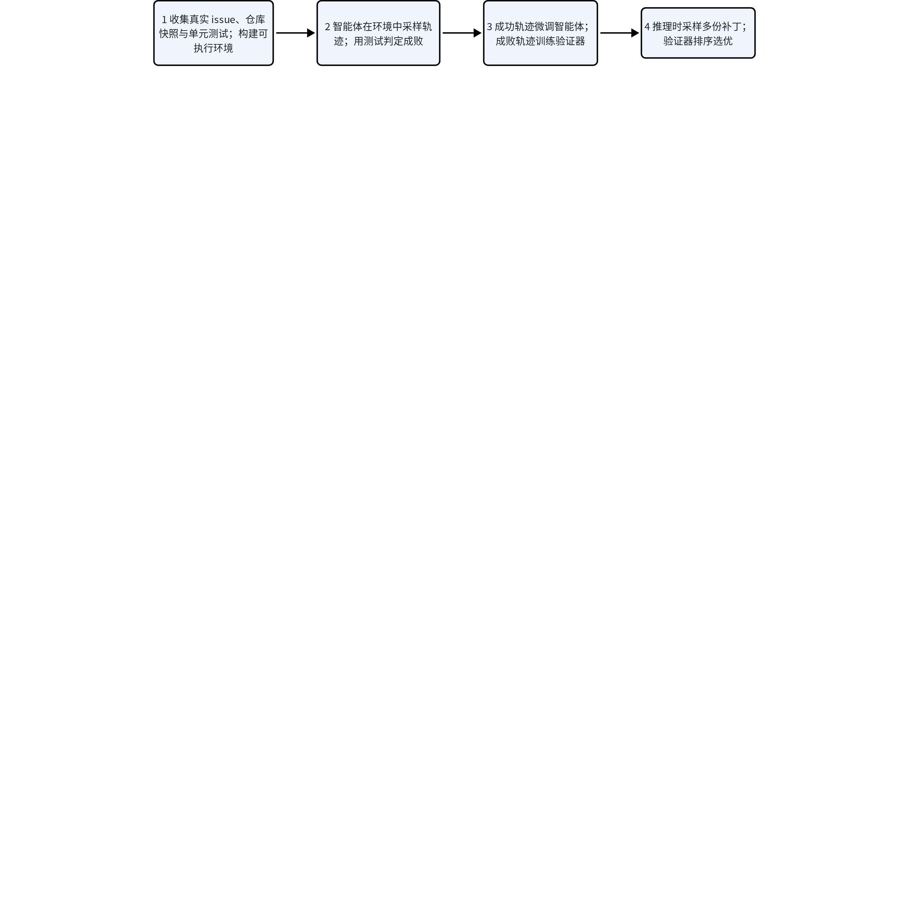
方法流程 · 原文档画板 · 点击查看原图 流程文字 flowchart LR
S1["1 收集真实 issue、仓库快照与单元测试；构建可执行环境"]
S2["2 智能体在环境中采样轨迹；用测试判定成败"]
S3["3 成功轨迹微调智能体；成败轨迹训练验证器"]
S4["4 推理时采样多份补丁；验证器排序选优"]
S1 --> S2 --> S3 --> S4
实验结果与结论： SWE-Gym 含 2,438 个任务。论文报告微调模型结合验证器后，在 SWE-bench Verified 与 Lite 上分别达到 32.0% 与 26.0% resolved rate；提升依赖相应模型、轨迹数和推理预算。
原文入口： https://arxiv.org/abs/2412.21139
任务与提示构建 / 02
核心要点： 从提交反推任务并生成测试，再将执行验证与学习型验证器结合选解。
主图： 原文 Figure 1，第 2 页（合成数据与混合验证器效果）。
方法分步：
从真实仓库的代码提交出发，恢复提交前状态，并依据提交变更反推待解决的自然语言任务。 为任务构建可运行环境与测试，执行参考修复并筛除无法稳定验证的样本。 在这些任务上采集智能体修复轨迹，用可执行反馈训练开源软件工程智能体。 推理时对候选补丁同时使用测试执行结果和学习型验证器评分，组合两类证据选解。 方法流程 · 原文档画板 · 点击查看原图 流程文字 flowchart LR
S1["1 从仓库提交反推自然语言任务"]
S2["2 收集或生成测试，构建可执行任务环境"]
S3["3 用合成任务训练 32B 软件工程智能体"]
S4["4 推理时结合执行测试与无执行验证器选补丁"]
S1 --> S2 --> S3 --> S4
实验结果与结论： 所下载 v1 PDF 报告 8.1K 以上任务，32B 模型单次解题率为 34.4%；混合验证器推理扩展达到 51.0% SWE-bench Verified。该数字随论文版本和推理预算而变化。
原文入口： https://arxiv.org/abs/2504.07164
任务与提示构建 / 03
核心要点： 先建可执行仓库环境，再注入会触发测试失败的缺陷以规模化合成任务。
主图： 原文 Figure 2，第 2 页（仓库到合成任务的流水线）。
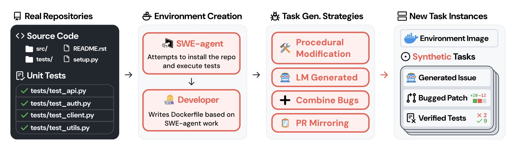
原文 Figure 2，第 2 页（仓库到合成任务的流水线） · 点击查看原图 方法分步：
选择真实 Python 仓库，安装依赖并确认原有测试在容器中通过，得到可靠的基线环境。 通过模型改写、AST 变异、缺陷组合或反转既有修复补丁注入缺陷。 重新运行测试，仅保留使原本通过的测试失败且可由参考改动恢复的候选。 据缺陷与失败信号生成 issue 说明，采样并筛选教师修复轨迹，形成训练样本。 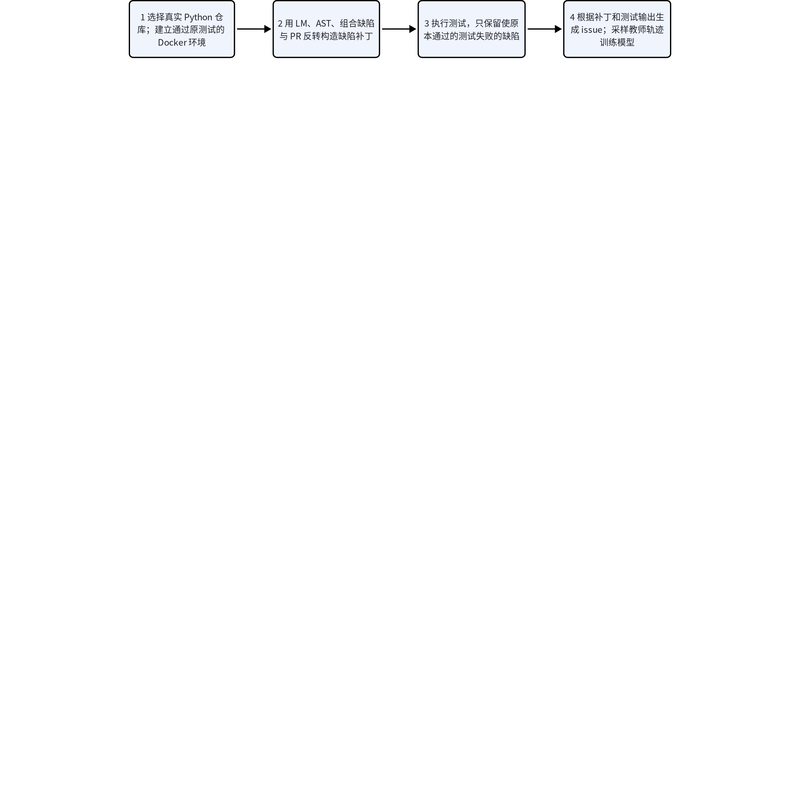
方法流程 · 原文档画板 · 点击查看原图 实验结果与结论： 论文构建约 50,000 个任务，覆盖 128 个仓库；从中生成 5,016 条教师轨迹，训练 SWE-agent-LM-32B，在 SWE-bench Verified 单次尝试达到 40.2% resolved rate。
原文入口： https://arxiv.org/abs/2504.21798
任务与提示构建 / 04
核心要点： 自动采集 issue 修复；以自动搭建与重跑提供上下文，以可执行测试；时间划分／SEM评估。
主图： 原文 Figure 1，第 4 页（自动采集流程）。
原文 Figure 1，第 4 页（自动采集流程） · 点击查看原图 方法分步：
从 GitHub 仓库的 issue 与关联修复提交中抽取候选，保留修复前代码、问题描述和补丁。 自动安装依赖并重建测试环境，执行修复前后版本，筛出具有可复现失败与修复信号的任务。 整理题面、仓库快照、测试命令和环境元数据，使任务可以独立重跑。 按时间构造新鲜评测集，并用语义等价匹配评估修复，分析静态基准与新任务的表现差异。 实验结果与结论： v2 PDF 报告 21,336 个可验证 Python 软件工程任务，来自 3,468 个 GitHub 仓库。作者将新鲜任务用于持续评测，并指出部分模型在静态 SWE-bench Verified 上的表现可能受污染影响；不能从该观察直接推断单个模型存在训练集泄漏。
原文入口： https://arxiv.org/abs/2505.20411
任务与提示构建 / 05
核心要点： 补充合成测试以评估补丁，再扩大智能体轨迹用于训练。 构建路线：测试驱动。 任务的可靠性依赖可执行测试，不能只生成自然语言题面。
主图：
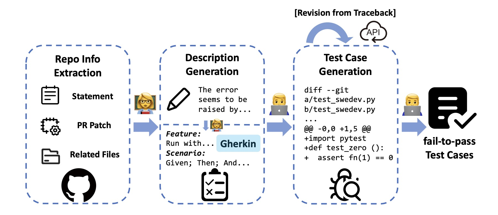
· 点击查看原图 方法分步：
从真实仓库及 PR 收集 issue 与修复补丁，过滤过短、过长或无关的样本。 提取相关代码和元数据，先让模型生成 Gherkin 行为场景，再据场景生成测试代码；必要时根据报错修订测试。 执行生成的测试，保留修复前失败、应用参考补丁后通过的测试，作为轨迹成败的可执行判据。 在任务上采样智能体交互轨迹，筛选正确轨迹进行后训练，并评估训练数据规模和推理交互预算的影响。 方法流程 · 原文档画板 · 点击查看原图 流程文字 flowchart LR
S1["1 从真实仓库与 PR 收集 issue 和修复补丁；过滤无效样本"]
S2["2 提取代码和元数据；生成 Gherkin 场景与测试代码，并按报错修订"]
S3["3 执行测试：修复前失败、应用参考补丁后通过，才保留"]
S4["4 采样并筛选正确智能体轨迹；后训练并评估训练与推理扩展"]
S1 --> S2 --> S3 --> S4
实验结果与结论： 在 SWE-bench Verified 上，SWE-Dev-7B 和 32B 的最终解决率分别达到 23.4% 和 36.6%。训练数据扩展实验中，7B 模型的轨迹数量从 574 条增加到 16,639 条时，解决率从 13.0% 提升至 22.8%；推理扩展使 32B 模型从 34.0% 提升至 36.6%，后者使用了额外的交互预算。后训练对比中，基于正确轨迹的拒绝采样微调（RFT）整体优于 KTO、OREO 及其混合配置。结果表明，补齐可执行测试、筛选高质量轨迹，并扩大训练数据与单次交互预算，可以共同提升软件工程智能体的能力。
原文入口： https://arxiv.org/abs/2506.07636
任务与提示构建 / 06
核心要点： 从单元测试及运行时依赖图推导增量开发步骤。 构建路线：测试驱动。 测试表达行为需求；每一步对应部分代码库、测试和所需代码修改。
主图：
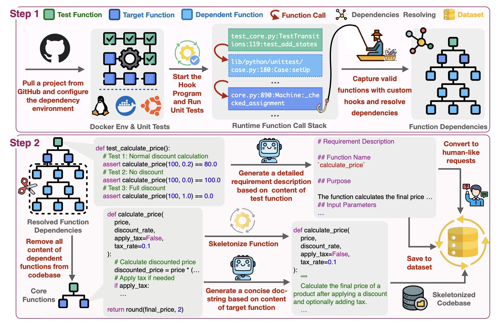
· 点击查看原图 方法分步：
筛选能在容器中通过原有测试的 Python 仓库，运行单元测试并记录项目内函数的实际调用关系。 根据每个测试的运行时依赖图，把待开发函数按依赖顺序排成增量开发步骤。 对每一步，从测试生成需求说明；移除目标函数或依赖函数的实现，得到待补全代码库。 用完整代码与待补全代码的差异生成参考补丁，并以对应单元测试验证，形成“代码库—需求—补丁—测试”任务。 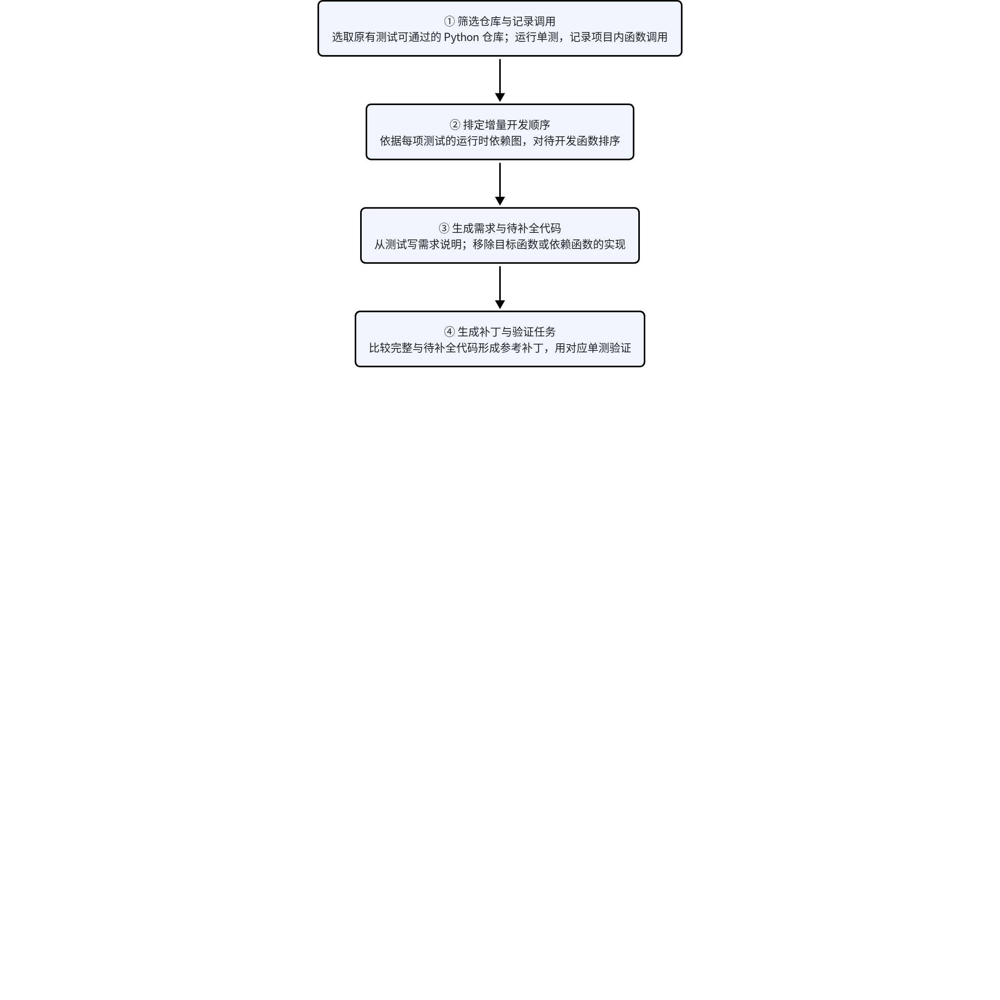
方法流程 · 原文档画板 · 点击查看原图 实验结果与结论： 论文从通过原有测试的开源 Python 项目构建 16,061 个训练任务和 2,020 个测试任务，并提出 SWE-Flow-Bench。用合成数据微调 Qwen2.5-Coder-32B-Instruct 后，SF-Coder-32B-Instruct 在 SWE-Flow-Bench Lite 的多数项目上提高了单元测试通过率；例如 arrow 项目的 Replace 格式从 46.0% 升至 76.0%，Patch 格式从 30.0% 升至 64.0%（论文附录 Table 5）。这支持以测试和运行时依赖生成可验证增量开发数据的有效性；上述成绩属于 TDD 任务评测，不能直接等同于 SWE-bench 的 issue 修复率。
原文入口： https://arxiv.org/abs/2506.09003
任务与提示构建 / 07
核心要点： 自动恢复测试文件、搭建执行环境，并用退出码验证真实 issue 的 fail-to-pass 关系。
主图： 原文 Figure 3，第 6 页（SWE-Builder 环境搭建）。
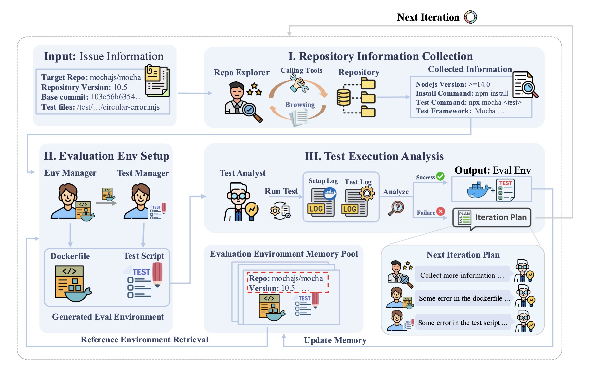
原文 Figure 3，第 6 页（SWE-Builder 环境搭建） · 点击查看原图 方法分步：
关联 GitHub issue 与 PR，恢复修复前仓库、完整测试补丁及可能缺失的二进制文件。 由 SWE-Builder 探查仓库，自动编写依赖安装、容器镜像与测试运行脚本。 在修复前后版本执行测试，根据退出码检查测试是否呈现 fail-to-pass 关系。 筛出可复现任务，连同题面、镜像、测试和参考补丁发布，用于训练与评测。 方法流程 · 原文档画板 · 点击查看原图 实验结果与结论： v3 摘要报告：四种语言的 671 个 issue 中，GPT-4.1 mini 配置构建 337 个有效任务，成本为每个 $0.047；退出码式 fail-to-pass 判定经人工抽查 F1 为 0.99。以 2,809 个 Python 任务训练后，所举 Qwen2.5-Coder-14B-Instruct 在 SWE-bench Verified 从 5.8% 提升到 21.0%。
原文入口： https://arxiv.org/abs/2506.10954
任务与提示构建 / 08
核心要点： 将任务构建、执行筛选与 SFT／RL 数据生产连接成流水线。 构建路线：提交反推／数据整理。 综述将其归为 commit reverse 路线；重点是任务产物与后训练数据的衔接。
主图：
· 点击查看原图 方法分步：
训练衔接： Figure 10 展示的是任务与环境生成流程。其后，论文用 SPICE 评估任务清晰度、测试有效性和难度；用执行通过的教师轨迹构成 SFT 数据，再从筛选任务中开展 RL。不要把这些后训练步骤误读为 Figure 10 内部节点。
方法流程 · 原文档画板 · 点击查看原图 流程文字 flowchart LR
A["① 真实提交<br/>问题与修复前快照"]
B["② 仓库探索<br/>定位构建与测试"]
C["③ 推断依赖<br/>构建可复用 Docker"]
D["④ 执行验证<br/>F2P 与 P2P"]
E["⑤ 输出任务<br/>环境、测试与补丁"]
A --> B --> C --> D --> E
D -.->|失败后修订| B
实验结果与结论： 论文报告 RepoForge Foundry 自动构建 7,304 个通过验证的 SWE 任务，并通过 937 个优化后的 Docker 镜像复用执行环境；平均每任务镜像占用从 1.4 GB 降至约 102 MB。训练方面，RepoForge-8B-Agent 在 SWE-bench Verified 上使用 RepoForge-OpenHands 框架达到 17.4% resolved rate，使用官方 OpenHands 框架为 16.4%；相同 RepoForge-OpenHands 设置下，SFT-only 为 12.7%，加入 RL 后提升 4.7 个百分点。结果表明，可执行环境的自动构建、任务质量筛选与分阶段后训练可以共同支持小模型的软件工程能力；两个框架的成绩应分别比较，不应混为同一评测设置。（原文第 3–5 节、Figure 1–2。）
原文入口： https://arxiv.org/abs/2508.01550
任务与提示构建 / 09
核心要点： 联合构建合成项目、任务、执行环境与交互经验。 构建路线：从零合成。 任务说明与项目一起生成，扩展到既有真实仓库之外。
主图：
· 点击查看原图 方法分步：
用语言模型提出满足领域、语言、项目规模与依赖约束的软件项目。 将项目拆为模块和接近单个 PR 工作量的开发任务，并为各任务列出测试清单。 由智能体生成仓库结构、函数桩、依赖和 Docker 文件，不预先实现目标功能。 让 OpenHands 根据测试清单编写并运行单元测试，检查导入、调用与断言的可执行性。 编码智能体逐任务实现功能；评估前恢复原始测试，执行验证并采集轨迹，同时派生修复、测试生成和构库等任务。 方法流程 · 原文档画板 · 点击查看原图 实验结果与结论： 论文从 28 个合成项目采集 704 条轨迹，覆盖通用开发、issue 修复、问题复现与从零构库。OpenHands CodeAct 设置下，SWE-Play-mix-7B 在 SWE-bench Verified 的解决率为 17.0%（基座 Qwen2.5-Coder-7B 为 1.8%）；SWT-Bench Lite 为 3.26%（基座 0.72%），Commit-0 Lite 为 2.95%（基座 1.82%）。这些结果说明从零合成项目能提供跨任务训练信号；论文实验使用 SFT，未报告这套数据上的 RL 提升。
原文入口： https://arxiv.org/abs/2512.12216
任务与提示构建 / 10
核心要点： 交替产生缺陷注入与修复经验，减少对人工 issue 的依赖。 构建路线：自博弈。 以测试补丁提供形式化任务约束，不应假设所有任务都必须有人类 issue 文本。
主图：
· 点击查看原图 方法分步：
从已安装依赖的真实仓库与源码出发，不依赖人工 issue 或预置的任务测试。 共享策略扮演缺陷注入者，生成缺陷补丁、弱化测试补丁、测试脚本和结果解析器。 执行一致性检查：原代码通过测试、注入缺陷后失败、弱化测试后目标失败被隐藏；只保留可复现挑战。 修复者在带缺陷仓库中生成补丁；评估时恢复原始测试，检查是否真正修复。 分别按缺陷有效性与修复难度、以及真实测试结果奖励注入和修复行为，更新共享策略并进入下一轮自博弈。 方法流程 · 原文档画板 · 点击查看原图 流程文字 flowchart LR
A["① 原始代码库<br/>仅需源码与依赖"]
B["② 注入缺陷<br/>生成测试工件"]
C["③ 一致性检查<br/>原版通过、缺陷失败"]
D["④ 智能体修复<br/>原始测试验补丁"]
E["⑤ 双角色奖励<br/>更新共享策略"]
A --> B --> C --> D --> E
E -.->|新一轮挑战| B
实验结果与结论： 论文 Figure 8 的单次尝试评测中，CWM-sft 经 Self-play SWE-RL 后在 SWE-bench Verified 达到 51.4% 解决率，高于基座的 41.0% 和常规 RL 的 49.0%；在 SWE-Bench Pro 公开集为 28.9%，高于基座的 21.1% 和常规 RL 的 25.3%。结果表明，在论文相同评测设置下，自生成缺陷及双角色奖励带来额外提升；这些单次尝试数字不应与其他框架或多次采样结果直接比较。
原文入口： https://arxiv.org/abs/2512.18552
任务与提示构建 / 11
核心要点： 把任务池连接到教师采样、真实执行反馈及 RL 环境，形成端到端后训练的数据生产流程。
主图： 原文 Figure 1，第 1 页（SFT、RL 与推理扩展）。
原文 Figure 1，第 1 页（SFT、RL 与推理扩展） · 点击查看原图 方法分步：
SWE-Master 方法分步（依据原论文） · 点击查看原图 汇集可运行的软件工程任务并准备仓库环境、测试和奖励反馈。 用教师智能体在任务上采样修复轨迹，执行验证后保留高质量成功轨迹作为监督微调数据。 在可交互环境中继续开展强化学习，使模型根据执行反馈调整行动。 推理时采样多个候选轨迹并依据验证信号选择补丁，同时单独报告增加推理预算带来的收益。 实验结果与结论： 论文在 SWE-bench Verified 的同一模型与基础框架设置下，Qwen2.5-Coder-32B 经轨迹筛选和长程 SFT 后的解决率为 57.8%，继续使用真实执行反馈 RL 后为 61.4%；增加推理预算并用环境反馈选优的 TTS@8 为 70.8%。逐阶段结果支持高质量教师轨迹、执行反馈及候选选择的作用；TTS@8 与单次采样不应按相同预算直接比较。（原文 Figure 1、Table 2。）
原文入口： https://arxiv.org/abs/2602.03411
任务与提示构建 / 12
核心要点： 利用专门构建器与验证器扩大多语言可验证环境供给。 构建路线：真实任务恢复。 任务说明必须与恢复后的环境和验证机制共同成立。
主图：
· 点击查看原图 方法分步：
抓取真实 GitHub PR，过滤评测集重叠，并拆出测试补丁与修复补丁；无测试的候选不进入构建。 构建器安装项目依赖、应用测试补丁并生成统一测试入口 evaluation.sh。 在修复前故障态和应用参考补丁后的修复态执行测试，要求前者失败、后者通过；失败则反馈给构建器重试。 在循环中检查静态字符串匹配等奖励捷径，拒绝未真正运行代码的验证脚本，只保留可信的多语言可执行环境。 方法流程 · 原文档画板 · 点击查看原图 流程文字 %%{init: {"flowchart": {"rankSpacing": 8, "nodeSpacing": 8, "padding": 0}}}%%
flowchart LR
A["1 PR 筛选"] --> B["2 验证脚本"] --> C["3 双态校验"] --> D["4 反作弊"]
D -.返工.-> B
classDef core fill:#E9F7F3,stroke:#079A83,stroke-width:2px,color:#12382F;
class A,B,C,D core;
实验结果与结论： 论文 v2 报告 807,693 个多语言可验证环境，来自 52,960 个 GitHub 仓库；其中 717,122 个来自关联 issue 的 PR，90,571 个以 PR 标题或描述构造任务说明。在保留样本上的构建实验中，迭代自验证使环境构建成功率从 82.6% 提至 94%；这不是模型解题率。使用相关环境训练后，Qwen3-Max-Thinking 在 SWE-bench Verified 达到 75.3%。结果支持双状态验证与循环反作弊对大规模任务构建的作用，但模型成绩还受到后续训练配方影响。（原文摘要、Table 1–2。）
原文入口： https://arxiv.org/abs/2602.02361
任务与提示构建 / 13
核心要点： 学习低成本的软件工程环境反馈，减少真实容器交互开销。 构建路线：替代环境。 该工作主要改变任务执行反馈的成本，不是独立的题面生成方法。
主图：
· 点击查看原图 方法分步：
从真实 Docker 智能体交互中收集命令反馈和终局测试报告，训练转移模型 SWT 与奖励模型 SWR。 轻量沙箱直接处理文件导航、读取和编辑，维持仓库状态及补丁的一致性。 对运行与测试命令，由 SWT 预测标准输出、错误输出和退出码，向智能体提供逐步反馈。 补丁提交后，由 SWR 生成测试报告和二元奖励；替代环境用于 SFT、RL 及多个候选解的测试时选择。 方法流程 · 原文档画板 · 点击查看原图 流程文字 %%{init: {"flowchart": {"rankSpacing": 8, "nodeSpacing": 8, "padding": 0}}}%%
flowchart LR
A["1 真反馈"] --> B["2 沙箱读写"] --> C["3 SWT 运行"] --> D["4 SWR 评测"]
classDef core fill:#FFF3E7,stroke:#B76823,stroke-width:2px,color:#513119;
class A,B,C,D core;
实验结果与结论： 论文 Table 2 报告，在 SWE-bench Verified 上，Qwen2.5-Coder-32B 基座解决率为 6.2%；用 SWE-World 轨迹进行 SFT 后为 52.0%，再进行无 Docker 的 RL 后为 55.0%，配合 SWR 选优的 TTS@8 为 68.2%。这说明在先用真实轨迹训练环境模型后，后续训练与推理可减少逐任务容器执行；替代反馈仍有误差，Table 3 中 SWT-72B 反馈的解决率为 60.2%，真实 Docker 反馈为 68.4%。（原文 Table 2–3。）
原文入口： https://arxiv.org/abs/2602.03419
任务与提示构建 / 14
核心要点： 跨语言自动采集真实仓库任务，生成可复现环境并筛除意图与测试不一致的样本。
主图： 原文 Figure 1，第 23 页（语种与时间分布；方法流程另见下图）。
语种与时间分布 · 点击查看原图 方法分步：
跨语言采集真实仓库的 issue、PR 和修复提交，恢复修复前代码与候选测试。 由交互式 setup agent 探索项目结构，生成依赖安装、测试命令和可复现的执行环境。 运行测试并检查修复前失败、修复后通过；再由多个模型评审任务意图与测试是否一致，剔除不可靠样本。 输出镜像、测试、安装说明与元数据，并按语言和时间分析任务覆盖与评测难度。 方法流程 · 原文档画板 · 点击查看原图 实验结果与结论： v2 摘要报告 32,079 个可执行任务，覆盖 20 种语言和 3,617 个仓库，并另发布超过 120,000 个带安装说明、fail-to-pass 测试及元数据的任务。该论文主要是数据构建与诊断研究，不能把任务数当作模型性能。
原文入口： https://arxiv.org/abs/2602.23866
任务与提示构建 / 15
核心要点： 将可验证任务、执行环境反馈与智能体训练整合。 构建路线：混合工业流水线。 任务、工具框架、中期训练与 RL 共同作用，不能将整体提升单独归因于 prompt。
主图：
· 点击查看原图 方法分步：
收集真实 GitHub PR 和既有可执行任务作为任务种子。 构建 Docker 环境，并通过缺陷注入、issue 与测试生成扩展可验证任务。 执行测试与质量检查，筛除不可复现、含糊或伪验证的任务。 把自然代码与合成任务用于 262,144 token 长上下文中期训练。 用执行验证的智能体轨迹做监督微调，同时校验代码编辑与工具调用。 分别在单轮编程题和多轮 SWE 环境中进行执行反馈强化学习，并将专家能力整合到统一模型。 Qwen3-Coder-Next 方法分步（依据原论文） · 点击查看原图 实验结果与结论： Qwen3-Coder-Next 为 80B 总参数、每 token 激活约 3B 参数。论文 Table 3–4 报告：SWE-bench Verified 在 SWE-Agent、MiniSWE-Agent、OpenHands 框架下分别为 70.6%、71.1%、71.3%；SWE-bench Multilingual 在 OpenHands 下为 64.3%，SWE-bench Pro 在 SWE-Agent 下为 42.7%。这些是不同框架与基准的分项成绩，不能合并为单一解决率。结果反映可验证任务合成、长上下文训练和执行反馈强化学习的整体训练配方，不能单独归因于任务生成。
原文入口： https://arxiv.org/abs/2603.00729
任务与提示构建 / 16
核心要点： 以 agent skill 为统一种子，同时生成终端任务、环境、验证器和教师轨迹。
主图： 原文 Figure 2，第 4 页（技能到任务、环境与轨迹）。
原文 Figure 2，第 4 页（技能到任务、环境与轨迹） · 点击查看原图 方法分步：
收集真实 agent skill，并根据规则、模型判断及使用情况筛选可转化为任务的技能。 以单个 skill、技能组合或技能关系图生成终端任务说明及教师执行指南。 同步生成文件、初始化脚本、沙箱环境和验证器，运行参考解与验证器并迭代修复不一致之处。 在通过验证的环境中采样技能指导的教师轨迹，供智能体监督训练与评测。 方法流程 · 原文档画板 · 点击查看原图 流程文字 flowchart LR
S1["1. 收集真实 agent skill；按规则、模型判断和使用情况筛选"]
S2["2. 以单个 skill、技能组合或关系图生成任务与教师指南"]
S3["3. 构建文件、初始化脚本、沙箱和验证器；运行参考解并迭代修复"]
S4["4. 在通过验证的环境中采样技能指导轨迹，用于训练与评测"]
S1 --> S2 --> S3 --> S4
实验结果与结论： v1 摘要报告 5,723 个训练环境；Terminal-World-32B 在 Terminal-Bench 2.0 达 31.5 Pass@1，比所比较的 Nemotron-Terminal-32B 高 4.5 个点，同时达 43.8 Pass@3。 证据：摘要与 Figure 2；v1 PDF
原文入口： https://arxiv.org/abs/2605.20876
任务与提示构建 / 17
核心要点： 从领域能力规格合成终端任务、可执行环境与可验证训练轨迹。
主图： 原文 Figure 1，第 3 页（领域到任务生成）。
原文 Figure 1，第 3 页（领域到任务生成） · 点击查看原图 方法分步：
从目标领域与能力规格出发，提出覆盖多种工具和操作的终端任务草案。 筛查任务复杂度、描述是否清楚、依赖资源是否可用，淘汰不可执行或含糊的候选。 为保留任务构建沙箱、初始文件、参考解与自动验证器，并运行验证。 采样专家交互轨迹生成 SFT 数据，再将可验证环境用于后续强化学习。 方法流程 · 原文档画板 · 点击查看原图 流程文字 flowchart LR
S1["1. 根据目标领域和能力规格提出多工具终端任务"]
S2["2. 筛查复杂度、描述清晰度和依赖资源可用性"]
S3["3. 构建沙箱、初始文件、参考解和自动验证器，并运行验证"]
S4["4. 采样专家轨迹生成 SFT 数据；验证环境用于后续强化学习"]
S1 --> S2 --> S3 --> S4
实验结果与结论： v1 摘要报告 11,255 条 SFT 轨迹（10 个领域）及 602 个可验证 RL 环境。32B 模型在 Terminal Bench 1.0、2.0、Pro 的 pass@1 分别为 29.06%、18.54%、34.00%；DMPO 继续带来增益。
原文入口： https://arxiv.org/abs/2605.29559
任务与提示构建 / 18
核心要点： 形成许可约束下的多语言软件工程蒸馏轨迹。 构建路线：任务到轨迹。 来源与许可属于 TaskPackage 元数据，并限制哪些轨迹能用于后续蒸馏。
主图：
· 点击查看原图 方法分步：
从 SWE-rebench V2 选取九种语言、采用 MIT、Apache 或 BSD 宽松许可的真实 PR。 以 MiniMax-M2.5 生成显式思考轨迹，并以 Qwen3.5-122B 生成非思考轨迹。 分别在 OpenHands 与 SWE-agent 框架中运行教师智能体，采集多轮工具交互。 剔除异常中断、空补丁、修改测试与工具调用错误的轨迹，并统一消息结构。 以 AST 扫描 Bash 命令，排除利用 git 历史泄漏答案的轨迹。 在 Qwen3-30B-A3B 系列上进行双模式蒸馏，并跨 SWE-bench Verified、Multilingual 和 Pro 评测。 Open-SWE-Traces 方法分步（依据原论文） · 点击查看原图 实验结果与结论： 最终语料含 207,489 条智能体轨迹，覆盖九种编程语言，来源于约 20,000 个真实 PR。论文报告基于 Qwen3-Coder-30B-A3B 训练的 Open-SWE-Agent，在 /no_think 模式与 MSWE-agent 框架下，于 SWE-bench Verified、Multilingual、Pro 分别取得 61.7%、57.1%、36.8% 解决率。同一论文的 Verified 评测中，MOpenHands 框架下基座为 50.0%，蒸馏后 /no_think 为 60.2%；这些数字表明轨迹蒸馏有效，但跨框架成绩不能直接相减。论文消融还显示多语言语料有助于多语言任务。
原文入口： https://arxiv.org/abs/2606.16038
任务与提示构建 / 19
核心要点： 在冻结历史信息的条件下构建面向未来的任务候选。 构建路线：新鲜度／预测条件合成。 预测条件参与任务生成，未来事件用于保留验证；两者需要时间隔离。
主图：
· 点击查看原图 方法分步：
在时间点 T₀ 冻结仓库历史，只读取此前的 issue、PR、标签与文本作为预测证据。 按功能增强、缺陷修复和重构聚类，输出带行为与验收条件的预测任务家族。 冻结预测后才查看 T₀ 之后的 PR，只评估预测方向与未来工作是否相关。 从通过验证的预测家族中选取方向，在任务生成时的仓库快照中定位代码缺口并撰写公开 issue。 独立构造隐藏测试补丁与参考修复，避免将后续 PR 内容写进题面、测试或补丁。 经过目标审计、泄漏审查、FAIL_TO_PASS 和选定 PASS_TO_PASS 检查后发布任务。 SWE-Future 方法分步（依据原论文） · 点击查看原图 实验结果与结论： 论文在 80 个仓库的回顾性研究中提出 260 个预测家族，151 个与后续工作强相关或相关，主指标相关率为 58.1%；更严格的强匹配为 111/260，即 42.7%。在 61 个仓库中进一步构建 200 个可执行验证任务，包括 120 个修复、60 个功能增强和 20 个重构任务。论文验证了预测方向的相关性及任务构建可执行性，未报告智能体在 SWE-Future 上的解题率。结果说明预测可引导更贴近仓库未来需求的合成，同时预测与测试构建仍有精度限制。
原文入口： https://arxiv.org/abs/2606.18733
任务与提示构建 / 20
核心要点： 以已验证任务递归延长解法并同步强化指令和验证器，形成长程终端任务。
主图： 原文 Figure 3，第 5 页（单轮递归合成）。
原文 Figure 3，第 5 页（单轮递归合成） · 点击查看原图 方法分步：
从已有参考解和验证器均通过的终端任务中选择种子。 围绕原任务增加新的必要操作，延长参考解，并同步更新用户指令、环境状态和成功条件。 先进行结构检查，再在新沙箱执行延长后的参考解与验证器，剔除不可解或验证失配的任务。 将通过验收的新任务送回种子池继续递归生成，并从中采样长程训练轨迹。 方法流程 · 原文档画板 · 点击查看原图 流程文字 flowchart LR
S1["1. 从参考解与验证器均通过的终端任务中选种子"]
S2["2. 增加必要操作，延长参考解；同步更新指令、环境和成功条件"]
S3["3. 结构检查后，在新沙箱运行参考解与验证器，剔除失败任务"]
S4["4. 验收任务回流种子池，继续递归并采样长程训练轨迹"]
S1 --> S2 --> S3 --> S4
S4 -.->|下一轮| S1
实验结果与结论： v3 摘要报告 15 轮生成 37,484 个任务，约 $0.05/任务；DeepSeek-V4-Pro pass@4 从第 1 轮 90% 降至第 15 轮 2.5%。合成轨迹监督微调让 Qwen3.5 模型在三个终端基准上最多提升 10 个点。
原文入口： https://arxiv.org/abs/2608.05466
任务与提示构建 / 21
核心要点： 把代码执行反馈封装为可复现交互环境，让模型反复尝试和修正。
主图： 原文 Figure 1，第 2 页（代码动作与执行反馈）。
原文 Figure 1，第 2 页（代码动作与执行反馈） · 点击查看原图 方法分步：
· 点击查看原图 实验结果与结论： 原文利用 NL2Bash、Spider、MBPP 建立 Bash、SQL、Python 三类交互环境，并在所测模型与提示设置中观察到交互式执行反馈的益处。它验证的是框架可用性与交互编程任务，不提供仓库 issue 修复率。
原文入口： https://arxiv.org/abs/2306.14898
任务与提示构建 / 22
核心要点： 从具因果依赖的 PR 链生成跨阶段长期演化轨迹作为训练资料。
主图： 原文 Figure 1，第 1 页（PR 链构造长程经验）。
原文 Figure 1，第 1 页（PR 链构造长程经验） · 点击查看原图 方法分步：
· 点击查看原图 实验结果与结论： 原文轨迹平均约 85k token、116 次工具调用；用 239 条样本微调 GLM-4.6 后，在 Toolathlon 上报告约 47% 相对提升。结果仅对应论文模型、数据和基准设置。
原文入口： https://arxiv.org/abs/2602.02619
轨迹与失败分析 / 01
核心要点： 融合有 issue 与无 issue 的多步轨迹，再用熵自适应 RLVR 训练修复策略。
主图： 原文 Figure 3，第 4 页（轨迹学习与 RLVR 两模块）。
原文 Figure 3，第 4 页（轨迹学习与 RLVR 两模块） · 点击查看原图 方法分步：
方法流程 · 原文档画板 · 点击查看原图 流程文字 flowchart LR
S1["Step 1: 在仓库环境中生成有 issue 引导和无 issue 的多步修复轨迹"]
S2["Step 2: 用 gold patch 与 Git hacking 过滤器筛选轨迹"]
S1 --> S2
S3["Step 3: 对部分轨迹屏蔽 issue 描述，进行 issue-free SFT"]
S2 --> S3
S4["Step 4: 按采样组优势和熵自适应裁剪执行 RLVR"]
S3 --> S4 实验结果与结论： 论文报告 SWE-bench Verified 上 8B/32B 模型分别达到 43.0%/60.2%；TTS@8 后达到 49.8%/65.2%。这些是论文自身的模型与推理设置结果。
原文入口： https://arxiv.org/abs/2603.07927
轨迹与失败分析 / 02
核心要点： 在可执行终端环境中采样专家交互，并结合任务、执行与行为检查筛选可用于后训练的轨迹。
主图： 原文 Figure 1，第 3 页（领域到任务生成）；图与完整实验笔记亦见第二部分。
原文 Figure 1，第 3 页（领域到任务生成） · 点击查看原图 方法分步：
方法流程 · 原文档画板 · 点击查看原图 流程文字 flowchart LR
S1["1. 根据目标领域和能力规格提出多工具终端任务"]
S2["2. 筛查复杂度、描述清晰度和依赖资源可用性"]
S3["3. 构建沙箱、初始文件、参考解和自动验证器，并运行验证"]
S4["4. 采样专家轨迹生成 SFT 数据；验证环境用于后续强化学习"]
S1 --> S2 --> S3 --> S4 实验结果与结论： 原文 v1 摘要报告 11,255 条 SFT 轨迹和 602 个可验证 RL 环境。就本章的轨迹筛选而言，测试通过之外还应检查工具使用、行为与信息来源；任务和环境生成的完整实验笔记见第二部分。
原文入口： https://arxiv.org/abs/2605.29559 补充笔记： 第二部分 LiteCoder-Terminal
轨迹与失败分析 / 03
核心要点： 从分支交互中构造紧凑示范、过程奖励训练数据和推理时搜索信号。
主图： 原文 Figure 1，第 7 页（rubric 过程奖励与 RL）。
原文 Figure 1，第 7 页（rubric 过程奖励与 RL） · 点击查看原图 方法分步：
方法流程 · 原文档画板 · 点击查看原图 流程文字 flowchart LR
S1["Step 1: 用逐步 oracle 核验生成约 6 万条偏向短路径的监督轨迹"]
S2["Step 2: 训练带记忆的长程 SWE 智能体并保留关键历史证据"]
S1 --> S2
S3["Step 3: Rubric-Agent 为中间步骤提供细粒度过程奖励"]
S2 --> S3
S4["Step 4: 推理时复用过程奖励模型筛选和剪枝动作候选"]
S3 --> S4 实验结果与结论： 论文 Table 2 在 SWE-bench Verified 报告 4B 与 30B 模型分别为 38.9% 与 63.5% Pass@1；加启发式 TTS 后为 40.7% 与 71.2%。这些成绩使用各自论文记录的 mini-SWE-Agent 配置，不能只按模型参数比较。
原文入口： https://arxiv.org/abs/2604.14820
轨迹与失败分析 / 04
核心要点： 利用多次采样结果选择可学任务，区分预算截断和提交失败。
主图： 原文 Figure 1，第 1 页（SFT、RL 与推理扩展）。
原文 Figure 1，第 1 页（SFT、RL 与推理扩展） · 点击查看原图 方法分步：
方法流程 · 原文档画板 · 点击查看原图 流程文字 flowchart LR
S1["Step 1: 用教师模型合成 SWE 交互轨迹并筛选数据"]
S2["Step 2: 在长程轨迹上做 SFT 初始化"]
S1 --> S2
S3["Step 3: 借助真实执行反馈开展强化学习"]
S2 --> S3
S4["Step 4: 推理时采样多个候选并利用环境反馈选优"]
S3 --> S4 实验结果与结论： 原文在 SWE-bench Verified 的同一实验设置下，Qwen2.5-Coder-32B 经 SWE-Master 后达到 61.4% resolved rate；TTS@8 为 70.8%。后者有额外推理预算。
原文入口： https://arxiv.org/abs/2602.03411
轨迹与失败分析 / 05
核心要点： 竞赛代码推理蒸馏：分析正确性筛选对难度与推理策略分布的影响。
主图： 原文 Figure 1，第 2 页（代码推理评测对比）。截图来自所列原文 PDF，仅用于文献评述。
原文 Figure 1，第 2 页（代码推理评测对比） · 点击查看原图 方法分步：
方法流程 · 原文档画板 · 点击查看原图 流程文字 flowchart LR
S1["Step 1: 汇集多样化竞赛编程问题"]
S2["Step 2: 由推理教师模型蒸馏多种解题过程和答案"]
S1 --> S2
S3["Step 3: 分析执行过滤、题目多样性与解法多样性"]
S2 --> S3
S4["Step 4: 用数据集进行纯 SFT 并在代码竞赛基准测试"]
S3 --> S4 实验结果与结论： 论文报告纯 SFT 模型在 LiveCodeBench 达到 61.8%，在 CodeContests 达到 24.6%。其消融发现执行过滤在所测设置中反而损害基准准确率；这是竞赛编程推理数据，不能直接外推到仓库级轨迹。
原文入口： https://arxiv.org/abs/2504.01943
轨迹与失败分析 / 06
核心要点： 通用推理数据选择：比较随机扩量、策略多样性和分歧选择；非编码专属证据。
主图：
· 点击查看原图 方法分步：
方法流程 · 原文档画板 · 点击查看原图 流程文字 flowchart LR
S1["Step 1: 从 NaturalReasoning 问题池采样多领域推理题"]
S2["Step 2: 使用强教师模型生成多条推理轨迹"]
S1 --> S2
S3["Step 3: 按难度和推理策略多样性选择蒸馏示例"]
S2 --> S3
S4["Step 4: 微调 Llama/Qwen 学生模型并测试 STEM 推理泛化"]
S3 --> S4 实验结果与结论： 原文显示随机扩充数据量是强基线；困难且策略多样的样本在所测规模下更节省样本，并在 GPQA-Diamond 等通用 STEM 基准优于若干已有蒸馏数据集。本研究非编码智能体实验，仅作为轨迹选样机制参照。
原文入口： https://arxiv.org/abs/2507.01921
轨迹与失败分析 / 07
核心要点： 按目标学生的可学习性选择轨迹；推理蒸馏背景。
主图： 原文 Figure 1，第 2 页（可学习性驱动选轨迹）。截图来自所列原文 PDF，仅用于文献评述。
原文 Figure 1，第 2 页（可学习性驱动选轨迹） · 点击查看原图 方法分步：
方法流程 · 原文档画板 · 点击查看原图 流程文字 flowchart LR
S1["Step 1: 针对每题从多个教师或采样运行获取候选推理轨迹"]
S2["Step 2: 估计学生在不同轨迹上的损失下降速率作为可学习性"]
S1 --> S2
S3["Step 3: 以正则化排序兼顾可学习性与数据覆盖"]
S2 --> S3
S4["Step 4: 选出轨迹做加权 SFT 并评估下游推理"]
S3 --> S4 实验结果与结论： 论文在多个学生模型和推理任务上报告 LARK 优于比较的轨迹选择基线，并显示可学习性分数与下游训练效用相关。它研究通用推理蒸馏，不提供编码智能体 issue 修复率。
原文入口： https://arxiv.org/abs/2605.30651
轨迹与失败分析 / 08
核心要点： 系统比较代码智能体轨迹的数据规模、质量筛选和错误重试特征。
主图： 原文 Figure 1，第 4 页（轨迹筛选实验流程）。截图来自所列原文 PDF，仅用于文献评述。
原文 Figure 1，第 4 页（轨迹筛选实验流程） · 点击查看原图 方法分步：
方法流程 · 原文档画板 · 点击查看原图 流程文字 flowchart LR
S1["Step 1: 从 67,074 条 SWE 轨迹中过滤可用于训练的实例"]
S2["Step 2: 按效率与交互风格两个维度计算质量分"]
S1 --> S2
S3["Step 3: 选不同质量和数量的子集对 7B 编码模型做 LoRA 微调"]
S2 --> S3
S4["Step 4: 用留出轨迹的交叉熵和首动作生成做代理评估"]
S3 --> S4 实验结果与结论： 原文 16 组实验发现质量与数量存在规模交互：500→1,000 条数据带来约 12.7% 的交叉熵降低；到 2,000 条时 TopQ 与随机抽样差距为 3.6%（p=0.016）。主要终点是代理指标而非 SWE-bench 修复率；作者明确称 7B 端到端修复率接近零。
原文入口： https://arxiv.org/abs/2607.17205
轨迹与失败分析 / 09
核心要点： 压缩推理文本以降低训练与推理成本；关注准确率与长度权衡。
主图： 原文 Figure 1，第 5 页（推理轨迹压缩率）。
原文 Figure 1，第 5 页（推理轨迹压缩率） · 点击查看原图 方法分步：
方法流程 · 原文档画板 · 点击查看原图 流程文字 flowchart LR
S1["Step 1: 由大模型教师生成正确的长推理轨迹"]
S2["Step 2: 用指令模型压缩轨迹并保留原始、压缩和只给答案三类监督"]
S1 --> S2
S3["Step 3: 在多种学生模型和训练方式下微调"]
S2 --> S3
S4["Step 4: 比较准确率、训练 token、耗时及推理长度"]
S3 --> S4 实验结果与结论： 原文 48 组主实验中压缩轨迹在所测尺度和教师模型上均低于原始轨迹准确率，但训练 token 降至原始的 12–30%，训练耗时缩短 2.0–7.6 倍。结论是准确率与效率的权衡，并非压缩后性能全面提升。
原文入口： https://arxiv.org/abs/2606.05988
轨迹与失败分析 / 10
核心要点： 结构感知掩码与蒸馏；主要为数学推理证据，向有状态编码轨迹迁移仍待验证。
主图： 原文 Figure 1，第 1 页（准确率与输出长度）。
· 点击查看原图 方法分步：
方法流程 · 原文档画板 · 点击查看原图 流程文字 flowchart LR
S1["Step 1: 用教师推理链构造结构化遮蔽重建任务"]
S2["Step 2: 先训练学生理解推理链的逻辑结构"]
S1 --> S2
S3["Step 3: 以 GRPO 强化学习寻找准确率与简短表达的平衡"]
S2 --> S3
S4["Step 4: 针对失败案例由教师重写推理并再次内化"]
S3 --> S4 实验结果与结论： 原文在 GSM8K 上报告 Qwen2.5-3B 相对原模型准确率提升 11.29%，输出 token 减少 27.4%，并测试了 SVAMP、MATH-500 的零样本迁移。该研究针对数学推理蒸馏，非编码轨迹。
原文入口： https://arxiv.org/abs/2602.17686
轨迹与失败分析 / 11
核心要点： 定位未被后续动作修复、最终造成失败的关键错误。
主图： 原文 Figure 1，第 1 页（可审计失败归因）。
原文 Figure 1，第 1 页（可审计失败归因） · 点击查看原图 方法分步：
方法流程 · 原文档画板 · 点击查看原图 流程文字 flowchart LR
S1["Step 1: 人工标注 170 条失败运行的关键步骤与失败类别"]
S2["Step 2: 从任务上下文和领域规则中合成可验证约束"]
S1 --> S2
S3["Step 3: 逐步检查轨迹并记录违反约束的证据"]
S2 --> S3
S4["Step 4: 使用证据日志定位关键失败步骤与类别"]
S3 --> S4 实验结果与结论： 原文在 11 类任务设置的 170 条轨迹上报告，AgentRx 的步骤定位指标相较先前方法平均改善 75%，并输出失败类别。170 是带标注的诊断基准规模，不是修复成功数。
原文入口： https://arxiv.org/abs/2602.02475
轨迹与失败分析 / 12
核心要点： 从成功轨迹学习动态模式以缩小失败候选窗口；异常不直接等于因果责任。
主图： 原文 Figure 1，第 2 页（成功轨迹动态与异常步骤）。
原文 Figure 1，第 2 页（成功轨迹动态与异常步骤） · 点击查看原图 方法分步：
方法流程 · 原文档画板 · 点击查看原图 流程文字 flowchart LR
S1["Step 1: 仅从成功的交互轨迹学习正常的潜空间动态"]
S2["Step 2: 使用神经控制微分方程建模状态随步骤的变化"]
S1 --> S2
S3["Step 3: 对失败轨迹的每一步计算偏离正常动态的异常分数"]
S2 --> S3
S4["Step 4: 按分数识别可能导致失败的步骤"]
S3 --> S4 实验结果与结论： 原文报告仅用 100 条成功轨迹训练时，比所测提示词诊断基线快 200–5,000 倍；域内与域外 F1 分别高约 20% 和 7%（按论文表述）。这是失败步骤识别指标，不能解读为任务解决率提高。
原文入口： https://arxiv.org/abs/2607.12747
轨迹与失败分析 / 13
核心要点： 追踪错误的出现、修复状态与终局影响，区分恢复过程与关键失败。
主图：
方法分步：
方法流程 · 原文档画板 · 点击查看原图 流程文字 flowchart LR
S1["Step 1: 以多粒度压缩长轨迹历史，保留跨步证据"]
S2["Step 2: 识别每个局部错误及其与任务约束的冲突"]
S1 --> S2
S3["Step 3: 追踪错误在后续步骤中被修复、无害化或传播的状态"]
S2 --> S3
S4["Step 4: 根据终局影响定位最早的关键错误"]
S3 --> S4 实验结果与结论： 作者构建含 486 条人工标注失败轨迹的 TrajErrBench，来源包括 τ2-Bench 与 SWE-Bench Pro；论文报告在比较基线上整体表现最好，并展示诊断结果可帮助后续智能体改进。这里是错误定位研究，不应把 486 当作修复任务数量。
原文入口： https://arxiv.org/abs/2608.06346
轨迹与失败分析 / 14
核心要点： 利用失败轨迹定位执行框架、工具接口、上下文管理及验证逻辑中的缺陷，并通过回放检验修复。
主图： 原文 Figure 2，第 4 页（失败轨迹到框架修复）；图与完整实验笔记亦见第五部分。
原文 Figure 2，第 4 页（失败轨迹到框架修复） · 点击查看原图 方法分步：
方法流程 · 原文档画板 · 点击查看原图 流程文字 flowchart LR
S1["Step 1: 汇集失败轨迹、评估材料与 harness 实现"]
S2["Step 2: 转为 HTIR，关联轨迹步骤、数据流与实现锚点"]
S1 --> S2
S3["Step 3: 定位失败责任并归并成 harness 缺陷记录"]
S2 --> S3
S4["Step 4: 按修复算子生成受约束补丁，回归验证后纳入记忆"]
S3 --> S4 实验结果与结论： 原文在 GAIA、SWE-bench Verified、AppWorld 和 Terminal-Bench 2.0 Verified 上报告相较初始 harness 提升 6.3%–18.4%。对本章而言，失败轨迹应先区分策略错误与系统缺陷，再决定进入策略训练、框架修复或隔离队列。
原文入口： https://arxiv.org/abs/2606.06324 补充笔记： 第五部分 HarnessFix
轨迹与失败分析 / 15
核心要点： 将历史修复抽象成定位、规划和执行／验证的分层程序并检索复用。
主图： 原文 Figure 1，第 4 页（分层轨迹抽象与规划）。
原文 Figure 1，第 4 页（分层轨迹抽象与规划） · 点击查看原图 方法分步：
方法流程 · 原文档画板 · 点击查看原图 流程文字 flowchart LR
S1["Step 1: 收集已解决问题的历史修复轨迹"]
S2["Step 2: 按诊断、定位、规划和验证阶段提取多层抽象节点"]
S1 --> S2
S3["Step 3: 为新问题检索并改写相关的跨层级操作计划"]
S2 --> S3
S4["Step 4: 将计划注入编码智能体，执行并测试修复"]
S3 --> S4 实验结果与结论： 原文在 SWE-bench Verified 报告与 Lingxi 结合时 MiniMax M2.5 为 81.2% Pass@1、GPT-5 为 79.2%；迁移到 miniSWE-agent v2 后从 75.8% 升至 81.0%。这些数字依赖相应 agent 与模型配置。
原文入口： https://arxiv.org/abs/2607.29658
轨迹与失败分析 / 16
核心要点： 研究原子能力如何通过组合轨迹形成可复用模块；属组合推理机制证据。
主图： 原文 Figure 1，第 2 页（技能模块与路由组合）。
原文 Figure 1，第 2 页（技能模块与路由组合） · 点击查看原图 方法分步：
方法流程 · 原文档画板 · 点击查看原图 流程文字 flowchart LR
S1["Step 1: 将推理轨迹建模为技能原子和信息路由的层次组合"]
S2["Step 2: 以组合轨迹做 SFT，确保原子能力覆盖"]
S1 --> S2
S3["Step 3: 用 RL 在变化的轨迹中识别和重组原子模块"]
S2 --> S3
S4["Step 4: 在未见过的更长或新组合上测试泛化"]
S3 --> S4 实验结果与结论： 受控组合实验支持作者的分工假设：SFT 提供可复用片段，RL 促进从复合轨迹中拆解与重组；复合轨迹训练优于只训练孤立原子。该结果是合成推理组合任务，不是编码智能体能力增益。
原文入口： https://arxiv.org/abs/2606.18089
轨迹与失败分析 / 17
核心要点： 对完整编码轨迹补充指令遵循、工具使用和交互质量评价。
主图： 原文 Figure 1，第 5 页（证据驱动的轨迹评审片段）。
· 点击查看原图 方法分步：
方法流程 · 原文档画板 · 点击查看原图 流程文字 flowchart LR
S1["Step 1: 采集交互编码任务的完整消息、工具调用和仓库终态"]
S2["Step 2: 有客观检查时运行形式化验证"]
S1 --> S2
S3["Step 3: 用 LLM 对工具使用、指令遵循、恢复能力和体验写证据化评审"]
S2 --> S3
S4["Step 4: 并排比较运行，追踪代理版本之间的回归"]
S3 --> S4 实验结果与结论： 论文展示了将形式验证与带证据的轨迹评审结合，用于评估生产式编码交互并发现版本回归；原文并未声称该评审方法本身提升任务修复率。卡片以评测可解释性为结论，不虚构解决率。
原文入口： https://arxiv.org/abs/2607.06624
轨迹与失败分析 / 18
核心要点： 从具因果依赖的 PR 链生成跨阶段长期演化轨迹作为训练资料。
主图： 原文 Figure 1，第 1 页（PR 链构造长程经验）。
原文 Figure 1，第 1 页（PR 链构造长程经验） · 点击查看原图 方法分步：
· 点击查看原图 实验结果与结论： 原文轨迹平均约 85k token、116 次工具调用；用 239 条样本微调 GLM-4.6 后，在 Toolathlon 上报告约 47% 相对提升。结果仅对应论文模型、数据和基准设置。
原文入口： https://arxiv.org/abs/2602.02619
轨迹与失败分析 / 19
核心要点： 让代理从探索失败中构造偏好对并迭代改进交互策略。
主图： 原文 Figure 1，第 1 页（探索失败轨迹驱动优化）。
原文 Figure 1，第 1 页（探索失败轨迹驱动优化） · 点击查看原图 方法分步：
· 点击查看原图 实验结果与结论： 原文在三个复杂交互任务上报告 ETO 持续优于所测基线，说明失败探索可提供训练信号；评测不是编码 issue 任务，不能视为软件修复实验结果。
原文入口： https://arxiv.org/abs/2403.02502
学习信号与后训练 / 01
核心要点： 基础方法：利用偏好对更新策略；并非编码数据集。
主图： 原文 Figure 1，第 2 页（RLHF 与 DPO）。
原文 Figure 1，第 2 页（RLHF 与 DPO） · 点击查看原图 方法分步：
方法流程 · 原文档画板 · 点击查看原图 流程文字 flowchart LR
S1["Step 1: 收集对同一提示的胜出和落选回答偏好对"]
S2["Step 2: 引入参考策略约束推导隐式奖励关系"]
S1 --> S2
S3["Step 3: 直接以分类式偏好损失优化语言模型"]
S2 --> S3
S4["Step 4: 在偏好评测任务上与 RLHF 等基线比较"]
S3 --> S4 实验结果与结论： 原文在其通用语言模型偏好任务上显示，DPO 无需单独训练奖励模型或在线 RL，效果可匹配或优于所测 RLHF 基线。此为偏好优化基础方法，论文未报告编码智能体修复率。
原文入口： https://arxiv.org/abs/2305.18290
学习信号与后训练 / 02
核心要点： 基础方法：消费独立的可取／不可取标签，无需逐一配对。
主图： 原文 Figure 1，第 1 页（前景理论效用曲线）。
原文 Figure 1，第 1 页（前景理论效用曲线） · 点击查看原图 方法分步：
方法流程 · 原文档画板 · 点击查看原图 流程文字 flowchart LR
S1["Step 1: 收集单条回答的期望／不期望二元反馈"]
S2["Step 2: 将损失规约到符合损失厌恶特性的效用函数"]
S1 --> S2
S3["Step 3: 构建 KTO 目标直接最大化输出效用"]
S2 --> S3
S4["Step 4: 在多个参数规模和对齐任务上比较偏好对方法"]
S3 --> S4 实验结果与结论： 原文报告 KTO 在 1B–30B 参数范围内，用非成对二元反馈达到或超过所测偏好对方法的表现；这支持较低标注成本的反馈利用，但不是编码智能体实验结论。
原文入口： https://arxiv.org/abs/2402.01306
学习信号与后训练 / 03
核心要点： 在专家状态采样学生动作，形成局部动作比较。
主图： 原文 Figure 1，第 2 页（动作级偏好学习）。
原文 Figure 1，第 2 页（动作级偏好学习） · 点击查看原图 方法分步：
方法流程 · 原文档画板 · 点击查看原图 流程文字 flowchart LR
S1["Step 1: 读取专家多轮轨迹中的各状态与专家动作"]
S2["Step 2: 在同一状态采样可能但错误的一步动作作为负例"]
S1 --> S2
S3["Step 3: 用保持策略不变的模式改写消除 schema 干扰"]
S2 --> S3
S4["Step 4: 用 DPO 式目标训练状态条件动作选择"]
S3 --> S4 实验结果与结论： 原文在 StableToolBench、τ-bench retail 和 Mind2Web 上优于 SFT；τ-bench 的一个实验设置从 21.7% 提至 41.4%。训练不需要在线环境 rollout，所报告任务并非编码 issue 修复。
原文入口： https://arxiv.org/abs/2607.10601
学习信号与后训练 / 04
核心要点： 多轮偏好优化加入熵目标，缓解交互任务中的探索退化。
主图： 原文 Figure 1，第 4 页（EntroPO 与推理扩展）。
原文 Figure 1，第 4 页（EntroPO 与推理扩展） · 点击查看原图 方法分步：
方法流程 · 原文档画板 · 点击查看原图 流程文字 flowchart LR
S1["Step 1: 收集多轮工具使用轨迹的偏好反馈"]
S2["Step 2: 将多轮偏好优化表述为带熵正则的 MDP"]
S1 --> S2
S3["Step 3: 推导 EntroPO-DPO 与 EntroPO-KTO 目标保持正确轨迹多样性"]
S2 --> S3
S4["Step 4: 推理时采样多个轨迹并结合验证器选优"]
S3 --> S4 实验结果与结论： 论文在其 SWE-bench leaderboard 设置中报告 30B 模型位列 SWE-bench Lite 开放权重模型第 1、Verified 第 4；排名随时间和参赛方案变化，应按论文发表时快照理解。核心消融指出保持正确解多样性有助于推理扩展。
原文入口： https://arxiv.org/abs/2509.12434
学习信号与后训练 / 05
核心要点： 基础优化器：利用优势与重要性比率进行策略更新。
主图： 原文 Figure 1，第 3 页（截断代理目标）。
原文 Figure 1，第 3 页（截断代理目标） · 点击查看原图 方法分步：
方法流程 · 原文档画板 · 点击查看原图 流程文字 flowchart LR
S1["Step 1: 用当前策略与环境交互采样轨迹"]
S2["Step 2: 估计回报及动作优势"]
S1 --> S2
S3["Step 3: 通过概率比截断约束策略更新幅度"]
S2 --> S3
S4["Step 4: 多轮小批量优化后再采样"]
S3 --> S4 实验结果与结论： 原文在 Atari 和模拟机器人控制实验中，PPO 相比部分在线策略梯度基线有更好的样本效率，同时避免 TRPO 的复杂实现。该论文是基础强化学习算法，不含编码任务结果。
原文入口： https://arxiv.org/abs/1707.06347
学习信号与后训练 / 06
核心要点： DeepSeekMath 中的 GRPO：同题分组奖励形成相对优势；属方法背景。
主图： 原文 Figure 1，第 1 页（DeepSeekMath 的 MATH 结果）。
原文 Figure 1，第 1 页（DeepSeekMath 的 MATH 结果） · 点击查看原图 方法分步：
方法流程 · 原文档画板 · 点击查看原图 流程文字 flowchart LR
S1["Step 1: 从网页筛选数学语料继续预训练代码基座模型"]
S2["Step 2: 为同一题目采样一组解答并以可验证结果打分"]
S1 --> S2
S3["Step 3: 用组内相对奖励构建 GRPO 更新，减少 PPO 价值模型开销"]
S2 --> S3
S4["Step 4: 在 MATH 等数学推理基准评估"]
S3 --> S4 实验结果与结论： DeepSeekMath 7B 在原文设置下 MATH top-1 为 51.7%，64 次自一致采样为 60.9%；这些是数学推理结果，不能写成代码智能体的性能。GRPO 在这里是后训练机制参考。
原文入口： https://arxiv.org/abs/2402.03300
学习信号与后训练 / 07
核心要点： 以执行筛选的轨迹热身，再对有状态、多轮的软件工程交互做强化学习。
主图： 原文 Figure 1，第 2 页（单轮任务与多轮环境反馈对比）。
原文 Figure 1，第 2 页（单轮任务与多轮环境反馈对比） · 点击查看原图 方法分步：
方法流程 · 原文档画板 · 点击查看原图 流程文字 flowchart LR
S1["Step 1: 构造可重现的软件工程环境和执行反馈"]
S2["Step 2: 用执行筛选的成功轨迹做 RFT 热身"]
S1 --> S2
S3["Step 3: 在长上下文、多轮交互中使用 DAPO 同步 RL 更新"]
S2 --> S3
S4["Step 4: 在 SWE-bench Verified 与时间切分的 SWE-rebench 上评估"]
S3 --> S4 实验结果与结论： 论文报告 Qwen2.5-72B-Instruct 在 SWE-bench Verified 的 Pass@1 从 11% 提升到 RFT 的 20%，再到 RL 后的 39%；在 SWE-rebench 5 月/6 月切分分别为 35%/31%。
原文入口： https://arxiv.org/abs/2508.03501
学习信号与后训练 / 08
核心要点： 基于价值的程序合成 RL，复用历史执行数据；函数／程序合成背景。
主图： 原文 Figure 1，第 4 页（价值学习初始化损失）。
原文 Figure 1，第 4 页（价值学习初始化损失） · 点击查看原图 方法分步：
方法流程 · 原文档画板 · 点击查看原图 流程文字 flowchart LR
S1["Step 1: 用已有程序样本和单元测试形成离策略经验"]
S2["Step 2: 以预训练代码模型初始化大动作空间的价值学习"]
S1 --> S2
S3["Step 3: 用测试结果构造程序功能正确性的奖励"]
S2 --> S3
S4["Step 4: 训练 B-Coder 并在程序合成任务比较策略梯度方法"]
S3 --> S4 实验结果与结论： 原文在所测程序合成任务上报告价值式 B-Coder 可达到与策略式方法可比或更好的表现，且奖励工程较少。其证据来自程序合成，不等于多轮仓库级智能体效果。
原文入口： https://arxiv.org/abs/2310.03173
学习信号与后训练 / 09
核心要点： 利用执行与测试将终局结果细化为行级过程监督；代码生成背景。
主图： 原文 Figure 1，第 3 页（代码过程奖励训练）。
原文 Figure 1，第 3 页（代码过程奖励训练） · 点击查看原图 方法分步：
方法流程 · 原文档画板 · 点击查看原图 流程文字 flowchart LR
S1["Step 1: 从代码候选及单元测试构造前缀正确性标签"]
S2["Step 2: 训练逐行评估部分代码的过程奖励模型"]
S1 --> S2
S3["Step 3: 将过程奖励同时用于密集反馈与价值函数初始化"]
S2 --> S3
S4["Step 4: 在代码生成任务检验 RL 训练效果"]
S3 --> S4 实验结果与结论： 论文报告在 HumanEval、MBPP、LiveCodeBench 等任务上，过程奖励与价值函数初始化的组合优于仅用稀疏终局测试反馈的 RL 设置，长代码尤其受益；论文未给仓库级 issue 修复指标。
原文入口： https://arxiv.org/abs/2410.17621
学习信号与后训练 / 10
核心要点： 利用执行语义和变量值预测，在程序失败时提取部分正确性信号。
主图：
· 点击查看原图 方法分步：
方法流程 · 原文档画板 · 点击查看原图 流程文字 flowchart LR
S1["Step 1: 运行当前策略生成的代码并记录变量级执行轨迹"]
S2["Step 2: 从执行行为形成代码语义对齐信号"]
S1 --> S2
S3["Step 3: 把该信号并入可验证奖励 RL 训练"]
S2 --> S3
S4["Step 4: 比较代码生成 pass@1 与不同任务迁移"]
S3 --> S4 实验结果与结论： 原文报告相对 RLVR 与蒸馏等后训练基线平均 pass@1 提升 4.6%（论文称相对提升）；其机制是变量级执行语义学习，不应把相对百分比误写成 4.6 个百分点。
原文入口： https://arxiv.org/abs/2510.18471
学习信号与后训练 / 11
核心要点： 对中间决策提供外部验证的过程奖励。
主图： 原文 Figure 1，第 3 页（结果、rollout 与可验证过程奖励）。
原文 Figure 1，第 3 页（结果、rollout 与可验证过程奖励） · 点击查看原图 方法分步：
方法流程 · 原文档画板 · 点击查看原图 流程文字 flowchart LR
S1["Step 1: 选择每步动作可由符号或算法 oracle 检查的任务"]
S2["Step 2: 为动态推断、逻辑约束和概率推理设计逐回合验证"]
S1 --> S2
S3["Step 3: 把可验证的中间反馈转成密集 RL 奖励"]
S2 --> S3
S4["Step 4: 和终局奖励及采样式过程奖励进行比较"]
S3 --> S4 实验结果与结论： 原文在受控任务上报告 VPR 优于终局奖励和 rollout 式过程奖励，并向通用与智能体推理基准迁移；收益依赖中间验证器可靠性。
原文入口： https://arxiv.org/abs/2605.10325
学习信号与后训练 / 12
核心要点： 按不可执行、可执行、正确、正确且高效构造性能反馈层级。
主图： 原文 Figure 1，第 4 页（正确性门控性能反馈）。
原文 Figure 1，第 4 页（正确性门控性能反馈） · 点击查看原图 方法分步：
方法流程 · 原文档画板 · 点击查看原图 流程文字 flowchart LR
S1["Step 1: 执行候选程序并依序检查提取、编译、运行和功能正确性"]
S2["Step 2: 对未通过者按执行进度给予分阶段奖励"]
S1 --> S2
S3["Step 3: 仅对正确程序按相对专家参考的运行效率排序"]
S2 --> S3
S4["Step 4: 用组合奖励微调并比较正确率与效率"]
S3 --> S4 实验结果与结论： 原文在 PerfCodeBench 上用 RLPF 微调 Qwen3-32B 后，正确且可运行的比例从 11.1% 升到 54.6%，相对效率指标从 8.1% 升到 38.6%；对 EffiBench-X 的迁移较温和。两项指标含义不同，不应混用。
原文入口： https://arxiv.org/abs/2607.27271
学习信号与后训练 / 13
核心要点： 训练时借助特权信息教师，向普通观测学生蒸馏；非编码专属机制。
主图： 原文 Figure 1，第 1 页（特权信息蒸馏）。
原文 Figure 1，第 1 页（特权信息蒸馏） · 点击查看原图 方法分步：
方法流程 · 原文档画板 · 点击查看原图 流程文字 flowchart LR
S1["Step 1: 在训练时给教师额外特权信息以获得成功动作轨迹"]
S2["Step 2: 仅保留学生推理时可见的消息、工具与动作"]
S1 --> S2
S3["Step 3: 联合训练有特权信息教师与无特权信息学生"]
S2 --> S3
S4["Step 4: 比较 π-Distill、OPSD 与 SFT 后 RL 的多轮任务效果"]
S3 --> S4 实验结果与结论： 原文在多个智能体基准上报告 π-Distill 和部分 OPSD 配置优于所测 SFT→RL 基线，尽管仅拿到教师动作而非完整思维链；此结果依赖具体特权信息形式，不是编码智能体专项分数。
原文入口： https://arxiv.org/abs/2602.04942
学习信号与后训练 / 14
核心要点： 将偏好优化扩展到长度不等的多轮代理轨迹。
主图： 原文 Figure 1，第 2 页（多轮轨迹偏好优化）。
原文 Figure 1，第 2 页（多轮轨迹偏好优化） · 点击查看原图 方法分步：
· 点击查看原图 实验结果与结论： 原文在其多轮智能体任务实验中报告 DMPO 优于比较的直接偏好学习基线，并分析长度归一化的重要性。这是通用语言代理训练研究，原文没有编码仓库修复率。
原文入口： https://arxiv.org/abs/2406.14868
学习信号与后训练 / 15
核心要点： 以单次 rollout 和稳定价值更新支持异步代理强化学习。
主图： 原文 Figure 1，第 1 页（单 rollout 异步 RL）。
原文 Figure 1，第 1 页（单 rollout 异步 RL） · 点击查看原图 方法分步：
· 点击查看原图 实验结果与结论： 原文报告 SAO 可稳定训练 1,000 步，并在 SWE-bench Verified、BeyondAIME、IMOAnswerBench 等任务中优于所测 GRPO 变体；还用于 GLM-5.2 的代理 RL 流水线。此结论同时涉及系统吞吐与训练稳定性。
原文入口： https://arxiv.org/abs/2607.07508
验证与泛化 / 01
核心要点： 官方审计：讨论 SWE-bench Verified 的题目质量与污染问题；属于审计报告。
方法分步：
方法流程 · 原文档画板 · 点击查看原图 流程文字 flowchart LR
S1["Step 1: 从 500 题 Verified 中选取 o3 在 64 次尝试里不稳定解决的 138 题"]
S2["Step 2: 每题由至少 6 位工程师独立审查问题描述、测试与补丁"]
S1 --> S2
S3["Step 3: 将过窄测试、过宽测试和其他实质问题分类并复核"]
S2 --> S3
S4["Step 4: 用多轮提示探测模型能否复现基准特有的 gold patch 信息"]
S3 --> S4 审计结果与结论： 被审计的 138 题中，至少 59.4% 有实质性问题：35.5% 为过窄测试，18.8% 为过宽测试，5.1% 为其他问题。该比例针对难题抽样，不应外推为 500 题总体问题率。报告还给出多家模型训练污染的实例证据。 官方报告
原文入口： https://openai.com/index/why-we-no-longer-evaluate-swe-bench-verified/
验证与泛化 / 02
核心要点： 官方审计：讨论 SWE-bench Pro 的需求、测试覆盖及评测有效性；属于审计报告。
方法分步：
方法流程 · 原文档画板 · 点击查看原图 流程文字 flowchart LR
S1["Step 1: 用任务说明、模型尝试、测试与失败轨迹进行自动质量筛查"]
S2["Step 2: 对疑似问题开展多次调查型智能体复核并由研究者判断"]
S1 --> S2
S3["Step 3: 并行让每题 5 位工程师独立标注问题类型与严重度"]
S2 --> S3
S4["Step 4: 比较自动审计与人工结论，归纳严格测试、欠指定和低覆盖等问题"]
S3 --> S4 审计结果与结论： 在 731 题公开切分中，自动流水线标出 200 题（27.4%）为损坏任务；人工标注活动识别 249 题（34.1%）。作者综合估计约 30% 任务存在问题，并撤回此前推荐 SWE-bench Pro 的意见。 官方报告
原文入口： https://openai.com/index/separating-signal-from-noise-coding-evaluations/
验证与泛化 / 03
核心要点： 从失败轨迹定位 harness 缺陷，用受约束补丁和回归测试修复运行框架。
主图： 原文 Figure 2，第 4 页（失败轨迹到框架修复）。
原文 Figure 2，第 4 页（失败轨迹到框架修复） · 点击查看原图 方法分步：
方法流程 · 原文档画板 · 点击查看原图 流程文字 flowchart LR
S1["Step 1: 汇集失败轨迹、评估材料与 harness 实现"]
S2["Step 2: 转为 HTIR，关联轨迹步骤、数据流与实现锚点"]
S1 --> S2
S3["Step 3: 定位失败责任并归并成 harness 缺陷记录"]
S2 --> S3
S4["Step 4: 按修复算子生成受约束补丁，回归验证后纳入记忆"]
S3 --> S4 实验结果与结论： 论文在 GAIA、SWE-bench Verified、AppWorld 和 Terminal-Bench 2.0 Verified 上报告，相比初始 harness 性能提升 6.3%–18.4%；这是跨四个基准的范围，不是单一基准增幅。
原文入口： https://arxiv.org/abs/2606.06324
数据系统 / 01
核心要点： 用合成多轮轨迹做 SFT，再在工具与编码环境中做 RL，形成可复用后训练流水线。
主图： 原文 Figure 2，第 5 页（多轮工具使用数据合成）。截图来自所列原文 PDF，仅用于文献评述。
原文 Figure 2，第 5 页（多轮工具使用数据合成） · 点击查看原图 方法分步：
方法流程 · 原文档画板 · 点击查看原图 流程文字 flowchart LR
S1["Step 1: 用领域、工具、数据库模式等种子合成任务、用户请求与工具描述"]
S2["Step 2: 采样用户、智能体、工具三方多轮交互轨迹并进行 SFT"]
S1 --> S2
S3["Step 3: 在可执行工具和编码环境中继续多轮 RL"]
S2 --> S3
S4["Step 4: 用能力保持合并平衡工具使用与编码表现"]
S3 --> S4 实验结果与结论： v1 Table 3 报告 Klear-AgentForge-8B 在 SWE-bench Verified 为 39.4%，Aider Polyglot 为 33.8%；Table 4 的纯 SFT 8B/32B 在 Verified 为 38.2%/55.2%。不同阶段与模型规模不可混为同一结果。
原文入口： https://arxiv.org/abs/2511.05951
数据系统 / 02
核心要点： 异步调度多轮工具交互，并将状态转移与奖励输送给在线 RL 后端。
主图： 原文 Figure 2，第 4 页（三阶段运行与训练数据流）。截图来自所列原文 PDF，仅用于文献评述。
原文 Figure 2，第 4 页（三阶段运行与训练数据流） · 点击查看原图 方法分步：
方法流程 · 原文档画板 · 点击查看原图 流程文字 flowchart LR
S1["Step 1: 根据任务初始化工具执行环境"]
S2["Step 2: 智能体多轮运行并记录工具调用与状态转移"]
S1 --> S2
S3["Step 3: 计算奖励，将转移写入 buffer，由异步调度器组织采样"]
S2 --> S3
S4["Step 4: 交给 RL 训练后端更新策略"]
S3 --> S4 实验结果与结论： 论文报告异步流水线相对朴素异步批处理快 1.55 倍；SA-SWE-32B 在 SWE-bench Verified 达到 39.4% Pass@1，并报告比同等表现的先前模型降低超过 2 倍训练成本。
原文入口： https://arxiv.org/abs/2511.16108
数据系统 / 03
核心要点： 用单一 jump-to-definition 工具学习沿执行逻辑定位仓库文件和函数。
主图： 原文 Figure 2，第 3 页（单一 jump 工具的仓库导航）。截图来自所列原文 PDF，仅用于文献评述。
原文 Figure 2，第 3 页（单一 jump 工具的仓库导航） · 点击查看原图 方法分步：
方法流程 · 原文档画板 · 点击查看原图 流程文字 flowchart LR
S1["Step 1: 从 issue 与入口文件构造定位目标"]
S2["Step 2: 用语言服务器实现 jump-to-definition，沿符号调用链导航"]
S1 --> S2
S3["Step 3: 记录多轮查询、工具调用和定位轨迹"]
S2 --> S3
S4["Step 4: 以定位奖励对模型做 GRPO 训练"]
S3 --> S4 实验结果与结论： v6 Table 1 中，Qwen2.5-7B + RepoNavigator GRPO 在 SWE-bench Verified 的函数级 Sample-F1 为 27.49、文件级为 51.63。该指标衡量定位，不是 issue 修复成功率。
原文入口： https://arxiv.org/abs/2512.20957
数据系统 / 04
核心要点： 在上下文接近上限时生成可训练摘要，让多段长程轨迹共享终局奖励。
主图： 原文 Figure 2，第 4 页（压缩段与跨轨迹优势）。
原文 Figure 2，第 4 页（压缩段与跨轨迹优势） · 点击查看原图 方法分步：
方法流程 · 原文档画板 · 点击查看原图 流程文字 flowchart LR
S1["Step 1: 智能体持续与环境交互，接近上下文上限时触发压缩"]
S2["Step 2: 策略模型生成摘要，并以摘要和最近交互重启后续 rollout"]
S1 --> S2
S3["Step 3: 让执行段与摘要段共享终局奖励"]
S2 --> S3
S4["Step 4: 采用 token 级损失归一化和跨轨迹 GAE 更新"]
S3 --> S4 实验结果与结论： v1 摘要报告 GLM-4.5-Air 在 SWE-bench Verified 和 Terminal-Bench 2.0 分别达到 66.8% 与 24.5% Pass@1，较对照提升 7.0 与 3.1 个点；GLM-4.7-Flash 分别达到 56.0% 与 20.2%，提升 5.5 与 6.8 个点。
原文入口： https://arxiv.org/abs/2607.05378
数据系统 / 05
核心要点： 按当前编码目标自适应筛选仓库上下文，减少无关 token。
主图： 原文 Figure 1，第 1 页（上下文压缩效应）。
原文 Figure 1，第 1 页（上下文压缩效应） · 点击查看原图 方法分步：
· 点击查看原图 实验结果与结论： 原文在四个基准及多个模型上，SWE-bench Verified 等多轮任务节省 23–54% token 且在所测设置中可改善成功率；单轮 LongCodeQA 最高压缩 14.84 倍，但任务口径不同。
原文入口： https://arxiv.org/abs/2601.16746
数据系统 / 06
核心要点： 用多 rubric 代码相关性建模裁剪上下文并保留结构证据。
主图： 原文 Figure 1，第 2 页（token 与任务质量比较）。
原文 Figure 1，第 2 页（token 与任务质量比较） · 点击查看原图 方法分步：
· 点击查看原图 实验结果与结论： 原文在 SWE-bench Verified、SWE-QA、LCC、LongCodeQA 上报告 16 组多轮对比中赢 12 组；多轮任务最多进一步省 31% token，单轮 Exact Match 最高增加 3.5。数字属于不同实验组，不能相加。
原文入口： https://arxiv.org/abs/2605.15315
背景与综述 / 01
Towards Long-Horizon Agents: A Survey 一句核心要点： 梳理长程智能体的模型、框架、环境与评估，作为编码任务范围的背景参照。
主图： 作者项目页 Figure 9：长程智能体全景图；图片来源见下方链接。
Towards Long-Horizon Agents: A Survey · 作者项目页 Figure 9：长程智能体全景图 · 点击查看原图 主图来源
论证与综述组织流程：
方法流程 · 原文档画板 · 点击查看原图 流程文字 flowchart LR
S1["Step 1: 区分 H1 单上下文、H2 跨上下文、H3 跨任务的长程问题"]
S2["Step 2: 将能力对应到交互推理、状态保持和经验积累"]
S1 --> S2
S3["Step 3: 按外部 harness 与内部模型优化整理技术路线"]
S2 --> S3
S4["Step 4: 用应用、基准和开放问题检验分类的适用范围"]
S3 --> S4 Step 1：区分 H1 单上下文、H2 跨上下文、H3 跨任务的长程问题 Step 2：将能力对应到交互推理、状态保持和经验积累 Step 3：按外部 harness 与内部模型优化整理技术路线 Step 4：用应用、基准和开放问题检验分类的适用范围 结论与证据边界： 这是一篇分类和研究路线综述：其核心判断是长程能力由模型与运行时 harness 共同构成，经验轨迹连接二者。图 9 是文献地图，不能当作某一种方法的性能对比；本文未提供统一受控实验来证明所有分类方案的优劣。
原文入口： https://long-horizon-agents.github.io/
背景与综述 / 02
Scaling LLM Agent Learning with Data Synthesis: A Comprehensive Survey 一句核心要点： 将目标、轨迹、反馈和环境的合成组织为智能体数据生命周期，并讨论质量控制。
主图： 作者网站所载综述总览图；图片来源见下方链接。
Scaling LLM Agent Learning with Data Synthesis: A Comprehensive Survey · 作者网站所载综述总览图 · 点击查看原图 主图来源
论证与综述组织流程：
方法流程 · 原文档画板 · 点击查看原图 流程文字 flowchart LR
S1["Step 1: 确定智能体数据所需的目标、轨迹、反馈和环境"]
S2["Step 2: 整理原始来源与任务、轨迹、反馈、环境四类合成方法"]
S1 --> S2
S3["Step 3: 通过过滤、验证和质量控制处理合成数据"]
S2 --> S3
S4["Step 4: 归纳合成数据用于训练与评测时的限制和开放问题"]
S3 --> S4 Step 1：确定智能体数据所需的目标、轨迹、反馈和环境 Step 2：整理原始来源与任务、轨迹、反馈、环境四类合成方法 Step 3：通过过滤、验证和质量控制处理合成数据 Step 4：归纳合成数据用于训练与评测时的限制和开放问题 结论与证据边界： 综述将数据合成作为扩展智能体学习资料的共同框架，并强调可验证反馈和质量控制；这是跨论文归纳，不能解读为作者在统一实验中证明合成数据必然提高编码智能体性能。原 One Page 的 BibTeX 只指向 OpenReview 首页，此处已核对并补上具体论文入口。
原文入口： https://openreview.net/forum?id=pQYwkpYmLy
背景与综述 / 03
Large Language Model-Based Agents for Software Engineering: A Survey 一句核心要点： 整理软件工程智能体的架构、应用与评测，为本项目界定对象范围。
主图： 原文 Figure 1：综述组织结构；图片来源见下方链接。
Large Language Model-Based Agents for Software Engineering: A Survey · 原文 Figure 1：综述组织结构 · 点击查看原图 主图来源
论证与综述组织流程：
方法流程 · 原文档画板 · 点击查看原图 流程文字 flowchart LR
S1["Step 1: 检索并筛选 LLM 智能体用于软件工程的研究"]
S2["Step 2: 汇集 106 篇论文作为综述材料"]
S1 --> S2
S3["Step 3: 分别从软件工程任务与智能体设计两个视角分类"]
S2 --> S3
S4["Step 4: 归纳挑战、未来方向和持续维护的论文清单"]
S3 --> S4 Step 1：检索并筛选 LLM 智能体用于软件工程的研究 Step 2：汇集 106 篇论文作为综述材料 Step 3：分别从软件工程任务与智能体设计两个视角分类 Step 4：归纳挑战、未来方向和持续维护的论文清单 结论与证据边界： 原文报告汇集并分类 106 篇相关论文，适合作为 Awesome 项目的范围和分类参照；106 是文献数量，不是实验样本或模型表现。该综述不提出可直接比较的编码智能体数据方法，也没有单一方法的实验增益。
原文入口： https://arxiv.org/abs/2409.02977